JSP 与 PHP、ASP、ASP.NET 等语言类似，运行在服务端的语言。
JSP（全称Java Server Pages）是由 Sun Microsystems 公司倡导和许多公司参与共同创建的一种使软件开发者可以响应客户端请求，而动态生成 HTML、XML 或其他格式文档的Web网页的技术标准。
JSP 技术是以 Java 语言作为脚本语言的，JSP 网页为整个服务器端的 Java 库单元提供了一个接口来服务于HTTP的应用程序。
JSP文件后缀名为 *.jsp 。
JSP开发的WEB应用可以跨平台使用，既可以运行在 Linux 上也能运行在 Windows 上。
语言学习入门的第一个程序一般都是输出 "Hello World"，JSP输出 "Hello World" 代码如下所示：
<html>
<head>
<title>第一个 JSP 程序</title>
</head>
<body>
<%
out.println("Hello World！");
%>
</body>
</html>
了解了 JSP 的基本概念后，现在让我们开始来学习 JSP吧。
JSP全称Java Server Pages，是一种动态网页开发技术。它使用JSP标签在HTML网页中插入Java代码。标签通常以<%开头以%>结束。
JSP是一种Java servlet，主要用于实现Java web应用程序的用户界面部分。网页开发者们通过结合HTML代码、XHTML代码、XML元素以及嵌入JSP操作和命令来编写JSP。
JSP通过网页表单获取用户输入数据、访问数据库及其他数据源，然后动态地创建网页。
JSP标签有多种功能，比如访问数据库、记录用户选择信息、访问JavaBeans组件等，还可以在不同的网页中传递控制信息和共享信息。
JSP程序与CGI程序有着相似的功能，但和CGI程序相比，JSP程序有如下优势：
最后，JSP是Java EE不可或缺的一部分，是一个完整的企业级应用平台。这意味着JSP可以用最简单的方式来实现最复杂的应用。
以下列出了使用JSP带来的其他好处：
我们将会带您一步一步地来搭建JSP运行环境，这需要有一定的Java基础。
如果您还未学过Java，可以先学习我们为您提供的Java教程。
JSP 开发环境是您用来开发、测试和运行 JSP 程序的地方。
本节将会带您搭建 JSP 开发环境，具体包括以下几个步骤。
如果你使用的是 Eclipse 环境，可以直接参阅：Eclipse JSP/Servlet 环境搭建。
这一步涉及 Java JDK 的下载和 PATH 环境变量的配置。
您可以从 Oracle 公司的 Java 页面中下载 JDK：Java SE Downloads
Java JDK 下载完后，请按照给定的指示来安装和配置 JDK。最后，通过设置 PATH 和 JAVA_HOME环境变量来指明包括 java 和 javac 的文件夹路径，通常是 java_install_dir/bin和java_install_dir。
假如您用的是 Windows 系统并且 JDK 的安装目录为 C::\jdk1.5.0_20，那么您就需要在 C:\autoexec.bat 文件中添加以下两行：
set PATH=C:\jdk1.5.0_20\bin;%PATH% set JAVA_HOME=C:\jdk1.5.0_20
或者，在 Windows NT/2000/XP下，您可以直接右击我的电脑图标，选择属性，然后高级，然后环境变量，接下来您就可以很方便地设置 PATH 变量并且确定退出就行了。
在 Linux/Unix 系统下，如果 JDK 的安装目录为 /usr/local/jdk1.5.0_20 并且使用的是 C shell，那么您就需要在 .cshrc 文件中添加以下两行：
setenv PATH /usr/local/jdk1.5.0_20/bin:$PATH setenv JAVA_HOME /usr/local/jdk1.5.0_20
或者，假如您正在使用类似于 Borland JBuilder、Eclipse、IntelliJ IDEA 和 Sun ONE Studio 这样的集成开发环境，可以试着编译并运行一个简单的程序来确定 IDE（集成开发环境）是否已经知道 JDK 的安装目录。
本步骤你也可以参考本站Java 开发环境配置章节的教程。
目前，市场上有很多支持 JSP 和 Servlets 开发的 Web 服务器。他们中的一些可以免费下载和使用，Tomcat 就是其中之一。
Apache Tomcat 是一个开源软件，可作为独立的服务器来运行 JSP 和 Servlets，也可以集成在 Apache Web Server 中。以下是 Tomcat 的配置方法：
在 Windows 机器下，Tomcat 可以通过执行以下命令来启动：
%CATALINA_HOME%\bin\startup.bat 或者 C:\apache-tomcat-5.5.29\bin\startup.bat
在 Linux/Unix 机器下，Tomcat 可以通过执行以下命令来启动：
$CATALINA_HOME/bin/startup.sh 或者 /usr/local/apache-tomcat-5.5.29/bin/startup.sh
成功启动 Tomcat 后，通过访问 http://localhost:8080/ 便可以使用 Tomcat 自带的一些 web 应用了。假如一切顺利的话，您应该能够看到以下的页面：
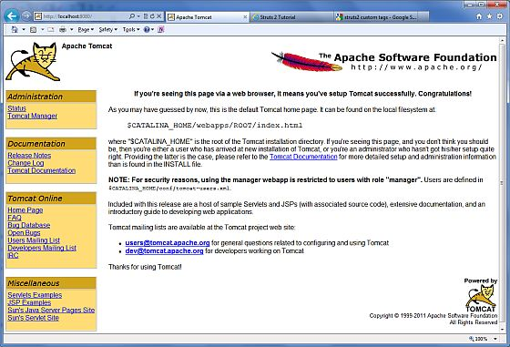
更多关于配置和运行 Tomcat 的信息可以在 Tomcat 提供的文档中找到，或者去 Tomcat 官网查阅：http://tomcat.apache.org。
在 Windows 机器下，Tomcat 可以通过执行以下命令来停止：
%CATALINA_HOME%\bin\shutdown.bat 或者 C:\apache-tomcat-5.5.29\bin\shutdown.bat
在 Linux/Unix 机器下，Tomcat 可以通过执行以下命令来停止：
$CATALINA_HOME/bin/shutdown.sh 或者 /usr/local/apache-tomcat-5.5.29/bin/shutdown.sh
由于 servlets 不是 Java SE 的一部分，所以您必须标示出 servlet 类的编译器。
假如您用的是 Windows 机器，您需要在 C:\autoexec.bat 文件中添加以下两行：
set CATALINA=C:\apache-tomcat-5.5.29 set CLASSPATH=%CATALINA%\common\lib\jsp-api.jar;%CLASSPATH%
或者，在 Windows NT/2000/XP 下，您只要右击我的电脑，选择属性，然后点击高级，然后点击环境变量，接下来便可以设置 CLASSPATH 变量并且确定退出即可。
在 Linux/Unix 机器下，假如您使用的是 C shell，那么您就需要在 .cshrc 文件中添加以下两行：
setenv CATALINA=/usr/local/apache-tomcat-5.5.29 setenv CLASSPATH $CATALINA/common/lib/jsp-api.jar:$CLASSPATH
注意：如果您的开发路径是 C:\JSPDev (Windows)或者 /usr/JSPDev (Linux/Unix)，那么您就需要将这些路径添加进 CLASSPATH 变量中。
本文假定你已安装了 JDK 环境，如未安装，可参阅 Java 开发环境配置 。
我们可以使用 Eclipse 来搭建 JSP 开发环境，首先我们分别下载一下软件包：
你可以根据你的系统下载对应的包(以下以Window系统为例)：
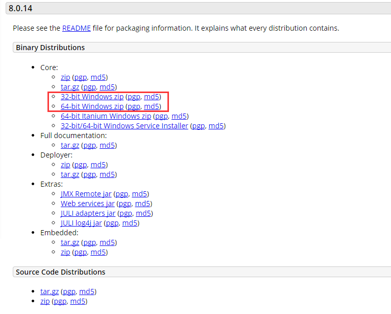
下载之后，将压缩包解压到D盘（你可以自己选择）：
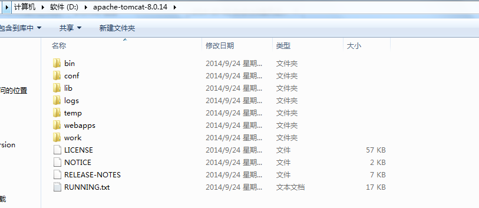
注意目录名不能有中文和空格。目录介绍如下：
接着我们可以双击 startup.bat 启动 Tomcat，弹出如下界面：
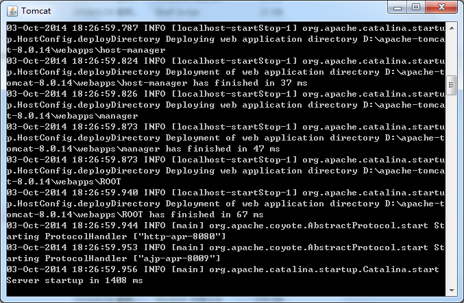
这个时候，本地的服务器就已经搭建起来了。如果想关闭服务器，可以直接关闭上面的窗口，或者在里面输入Ctrl+C禁止服务。
接着我们在浏览器中输入 http://localhost:8080/，如果弹出如下界面，表示tomcat安装成功并且启动起来了：
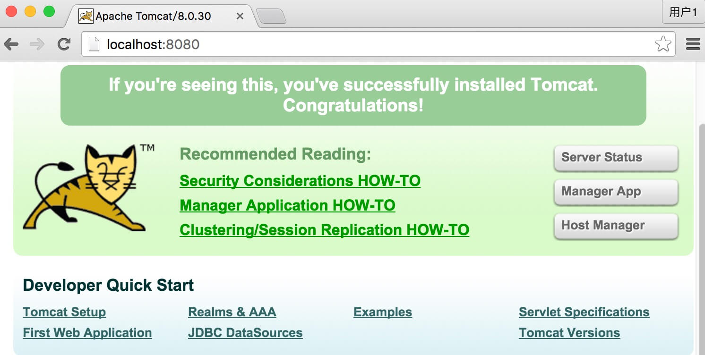
我们现在在浏览器上测试一下它吧：
首先在D:\apache-tomcat-8.0.14\webapps\ROOT目录中新建一个jsp文件：
test.jsp 文件代码如下：
<%@ page contentType="text/html;charset=UTF-8" %>
<%
out.print("菜鸟教程 : http://www.runoob.com");
%>
接着在浏览器中访问地址 http://localhost:8080/test.jsp, 输出结果如下：
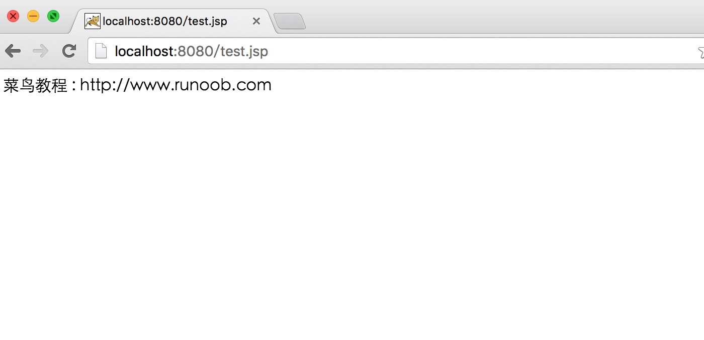
Eclipse J2EE下载后，解压即可使用，我们打开Java EE ，选择菜单栏Windows-->preferences（Mac 系统为 Eclipse-->偏好设置），弹出如下界面：
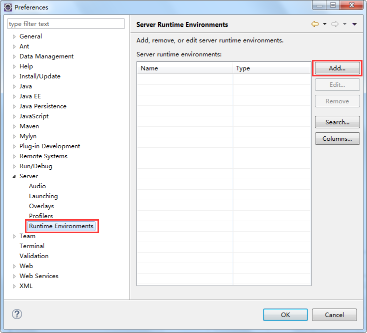
上图中，点击"add"的添加按钮，弹出如下界面：
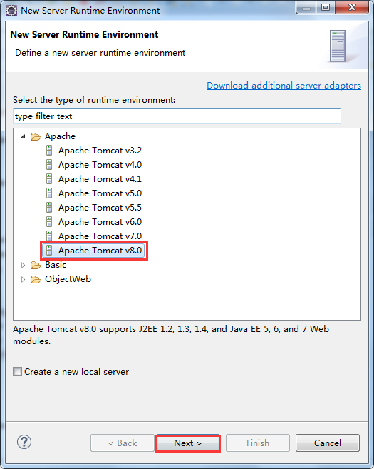
在选项中，我们选择对应的 Tomcat 版本，接着点击 "Next"，选择 Tomcat 的安装目录，并选择我们安装的 Java 环境：
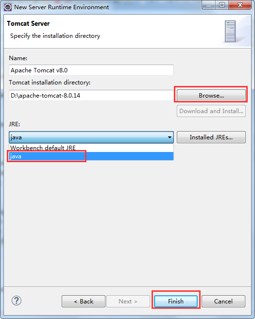
点击 "Finish"，完成配置。
选择 "File-->New-->Dynamic Web Project"，创建 TomcatTest 项目：
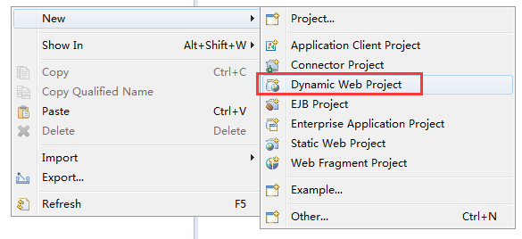
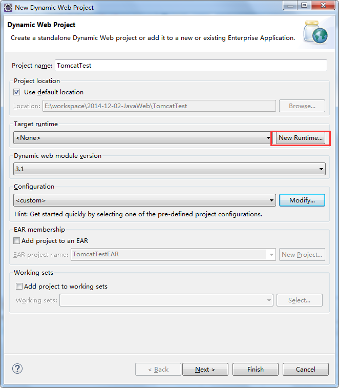
点开上图中的红框部分，弹出如下界面：
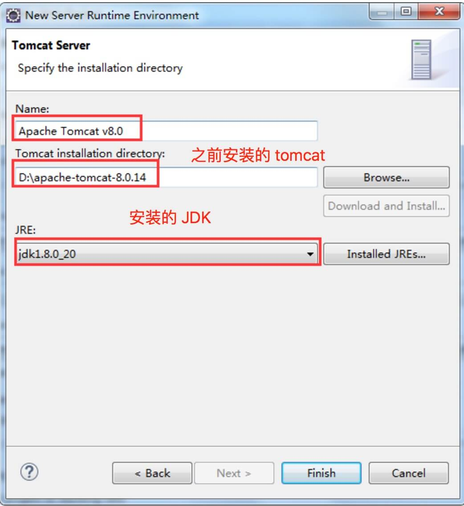
注意如果已默认选择了我们之前安装的 Tomcat 和 JDK 则可跳过此步。
然后，单击finish, 继续：
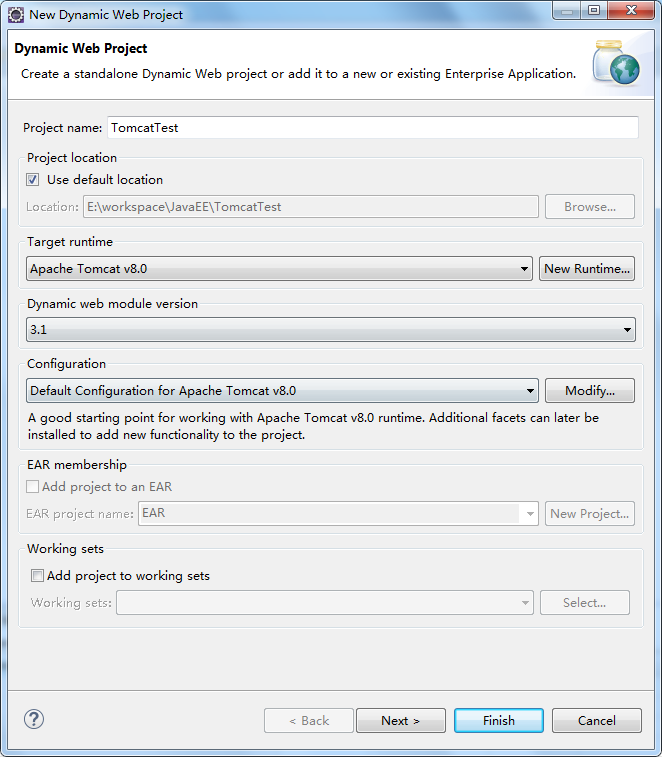
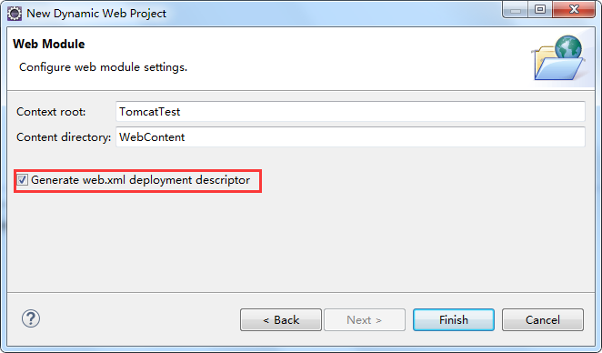
工程文件结构：
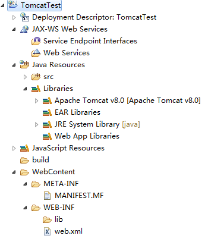
上图中各个目录解析：
在WebContent文件夹下新建一个test.jsp文件。在下图中可以看到它的默认代码：
<%@ page language="java" contentType="text/html; charset=UTF-8"
pageEncoding="UTF-8"%>
<!DOCTYPE html PUBLIC "-//W3C//DTD HTML 4.01 Transitional//EN" "http://www.w3.org/TR/html4/loose.dtd">
<html>
<head>
<meta http-equiv="Content-Type" content="text/html; charset=UTF-8">
<title>Insert title here</title>
</head>
<body>
</body>
</html>
接着我们修改下test.jsp文件代码如下所示：
<%@ page language="java" contentType="text/html; charset=UTF-8"
pageEncoding="UTF-8"%>
<!DOCTYPE html PUBLIC "-//W3C//DTD HTML 4.01 Transitional//EN" "http://www.w3.org/TR/html4/loose.dtd">
<html>
<head>
<meta http-equiv="Content-Type" content="text/html; charset=UTF-8">
<title>菜鸟教程</title>
</head>
<body>
<%
out.println("Hello World!");
%>
</body>
</html>
程序运行之前，我们先修改一下浏览器选项:
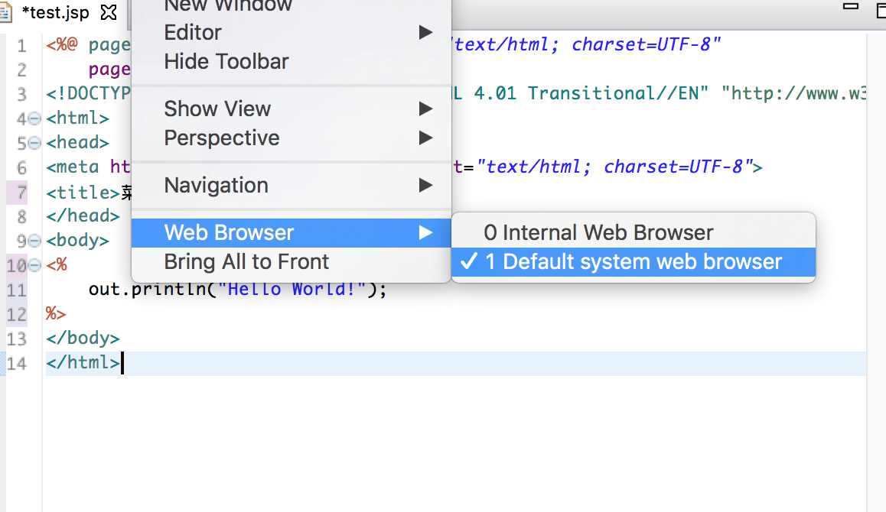
接着我们运行该项目:
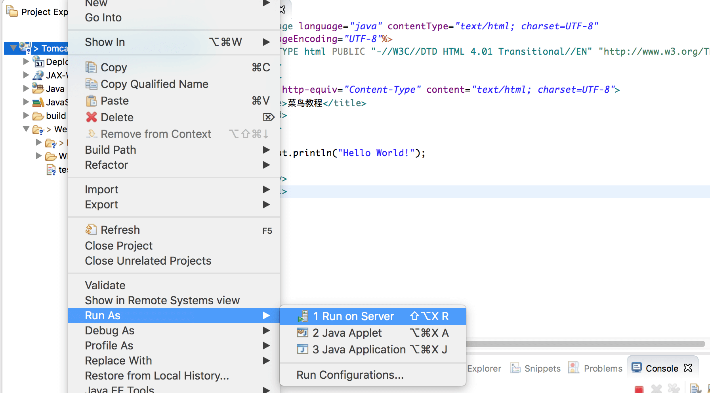
运行时，弹出如下错误：(如果没有此错误，请忽略)
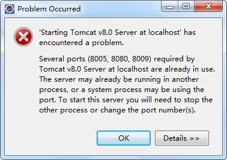
原因是，我们之前点击了Tomcat安装包中的startup.bat，这样一来就手动打开了Tomcat服务器，这明显是多余的，因为程序运行时，eclipse会自动开启Tomcat服务器。所以我们先手动关掉tomcat软件，再次运行程序，就行了。控制台信息如下：
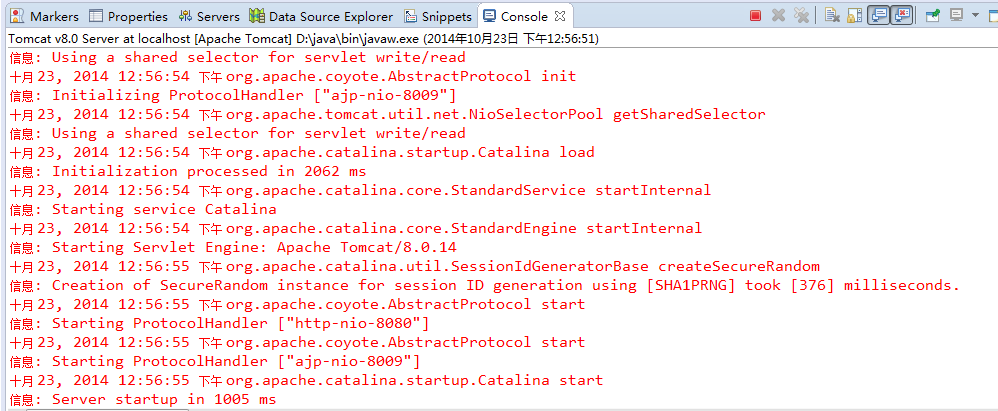
浏览器访问 http://localhost:8080/TomcatTest/test.jsp, 即可输出正常结果：
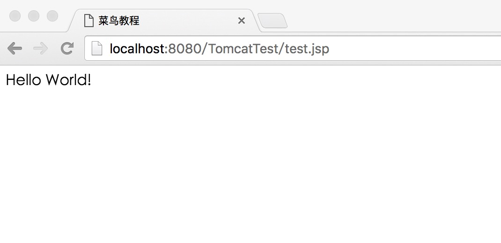
我们也可以使用以上环境创建 Servlet 文件，选择 "File-->New-->Servlet":
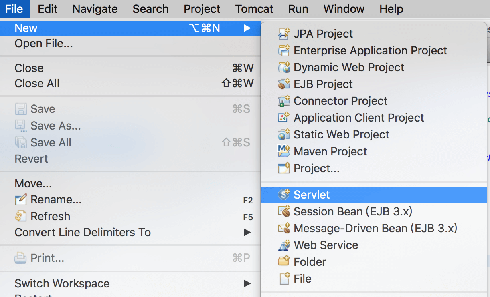
位于 TomcatTest项目的 /TomcatTest/src 目录下创建 "HelloServlet" 类，包为 "com.runoob.test":
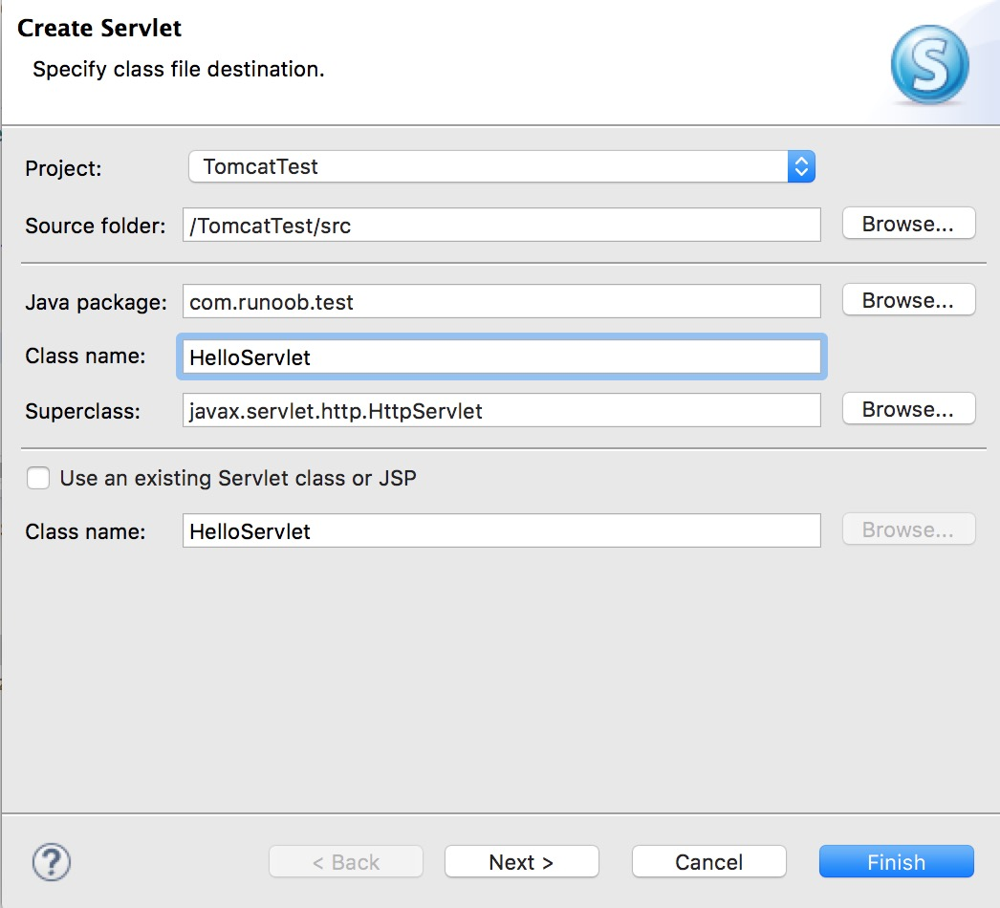
HelloServlet.java 代码如下所示：
package com.runoob.test;
import java.io.IOException;
import javax.servlet.ServletException;
import javax.servlet.annotation.WebServlet;
import javax.servlet.http.HttpServlet;
import javax.servlet.http.HttpServletRequest;
import javax.servlet.http.HttpServletResponse;
/**
* Servlet implementation class HelloServlet
*/
@WebServlet("/HelloServlet")
public class HelloServlet extends HttpServlet {
private static final long serialVersionUID = 1L;
/**
* @see HttpServlet#HttpServlet()
*/
public HelloServlet() {
super();
// TODO Auto-generated constructor stub
}
/**
* @see HttpServlet#doGet(HttpServletRequest request, HttpServletResponse response)
*/
protected void doGet(HttpServletRequest request, HttpServletResponse response) throws ServletException, IOException {
// 使用 GBK 设置中文正常显示
response.setCharacterEncoding("GBK");
response.getWriter().write("菜鸟教程：http://www.runoob.com");
}
/**
* @see HttpServlet#doPost(HttpServletRequest request, HttpServletResponse response)
*/
protected void doPost(HttpServletRequest request, HttpServletResponse response) throws ServletException, IOException {
// TODO Auto-generated method stub
doGet(request, response);
}
}
创建 /TomcatTest/WebContent/WEB-INF/web.xml 文件（如果没有），代码如下所示：
<?xml version="1.0" encoding="UTF-8"?>
<web-app version="2.5"
xmlns="http://java.sun.com/xml/ns/javaee"
xmlns:xsi="http://www.w3.org/2001/XMLSchema-instance"
xsi:schemaLocation="http://java.sun.com/xml/ns/javaee
http://java.sun.com/xml/ns/javaee/web-app_2_5.xsd">
<servlet>
<!-- 类名 -->
<servlet-name>HelloServlet</servlet-name>
<!-- 所在的包 -->
<servlet-class>com.runoob.test.HelloServlet</servlet-class>
</servlet>
<servlet-mapping>
<servlet-name>HelloServlet</servlet-name>
<!-- 访问的网址 -->
<url-pattern>/TomcatTest/HelloServlet</url-pattern>
</servlet-mapping>
</web-app>
接着重启 Tomcat，浏览器访问 http://localhost:8080/TomcatTest/HelloServlet：
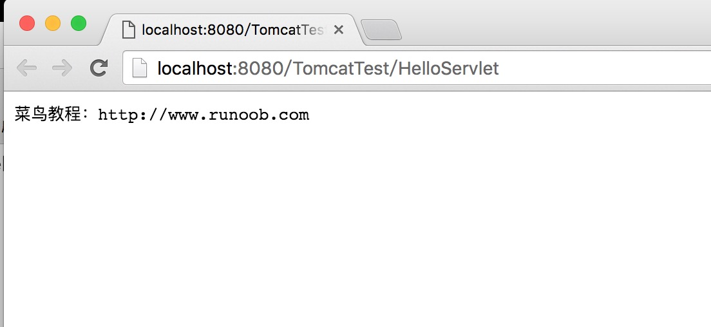
参考文章：http://www.cnblogs.com/smyhvae/p/4046862.html
网络服务器需要一个 JSP 引擎，也就是一个容器来处理 JSP 页面。容器负责截获对 JSP 页面的请求。本教程使用内嵌 JSP 容器的 Apache 来支持 JSP 开发。
JSP 容器与 Web 服务器协同合作，为JSP的正常运行提供必要的运行环境和其他服务，并且能够正确识别专属于 JSP 网页的特殊元素。
下图显示了 JSP 容器和 JSP 文件在 Web 应用中所处的位置。
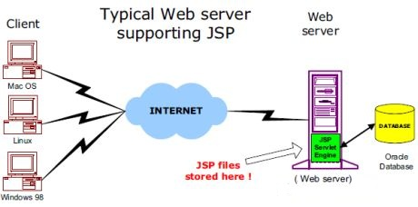
以下步骤表明了 Web 服务器是如何使用JSP来创建网页的：
就像其他普通的网页一样，您的浏览器发送一个 HTTP 请求给服务器。
Web 服务器识别出这是一个对 JSP 网页的请求，并且将该请求传递给 JSP 引擎。通过使用 URL或者 .jsp 文件来完成。
JSP 引擎从磁盘中载入 JSP 文件，然后将它们转化为 Servlet。这种转化只是简单地将所有模板文本改用 println() 语句，并且将所有的 JSP 元素转化成 Java 代码。
JSP 引擎将 Servlet 编译成可执行类，并且将原始请求传递给 Servlet 引擎。
Web 服务器的某组件将会调用 Servlet 引擎，然后载入并执行 Servlet 类。在执行过程中，Servlet 产生 HTML 格式的输出并将其内嵌于 HTTP response 中上交给 Web 服务器。
Web 服务器以静态 HTML 网页的形式将 HTTP response 返回到您的浏览器中。
最终，Web 浏览器处理 HTTP response 中动态产生的HTML网页，就好像在处理静态网页一样。
以上提及到的步骤可以用下图来表示：
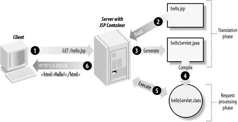
一般情况下，JSP 引擎会检查 JSP 文件对应的 Servlet 是否已经存在，并且检查 JSP 文件的修改日期是否早于 Servlet。如果 JSP 文件的修改日期早于对应的 Servlet，那么容器就可以确定 JSP 文件没有被修改过并且 Servlet 有效。这使得整个流程与其他脚本语言（比如 PHP）相比要高效快捷一些。
总的来说，JSP 网页就是用另一种方式来编写 Servlet 而不用成为 Java 编程高手。除了解释阶段外，JSP 网页几乎可以被当成一个普通的 Servlet 来对待。
理解JSP底层功能的关键就是去理解它们所遵守的生命周期。
JSP生命周期就是从创建到销毁的整个过程，类似于servlet生命周期，区别在于JSP生命周期还包括将JSP文件编译成servlet。
以下是JSP生命周期中所走过的几个阶段：
servlet容器编译servlet源文件，生成servlet类
加载与JSP对应的servlet类，创建其实例，并调用它的初始化方法
调用与JSP对应的servlet实例的服务方法
调用与JSP对应的servlet实例的销毁方法，然后销毁servlet实例
很明显，JSP生命周期的四个主要阶段和servlet生命周期非常相似，下面给出图示：
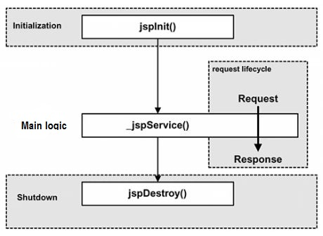
当浏览器请求JSP页面时，JSP引擎会首先去检查是否需要编译这个文件。如果这个文件没有被编译过，或者在上次编译后被更改过，则编译这个JSP文件。
编译的过程包括三个步骤：
容器载入JSP文件后，它会在为请求提供任何服务前调用jspInit()方法。如果您需要执行自定义的JSP初始化任务，复写jspInit()方法就行了，就像下面这样：
public void jspInit(){
// 初始化代码
}
一般来讲程序只初始化一次，servlet也是如此。通常情况下您可以在jspInit()方法中初始化数据库连接、打开文件和创建查询表。
这一阶段描述了JSP生命周期中一切与请求相关的交互行为，直到被销毁。
当JSP网页完成初始化后，JSP引擎将会调用_jspService()方法。
_jspService()方法需要一个HttpServletRequest对象和一个HttpServletResponse对象作为它的参数，就像下面这样：
void _jspService(HttpServletRequest request,
HttpServletResponse response)
{
// 服务端处理代码
}
_jspService()方法在每个request中被调用一次并且负责产生与之相对应的response，并且它还负责产生所有7个HTTP方法的回应，比如GET、POST、DELETE等等。
JSP生命周期的销毁阶段描述了当一个JSP网页从容器中被移除时所发生的一切。
jspDestroy()方法在JSP中等价于servlet中的销毁方法。当您需要执行任何清理工作时复写jspDestroy()方法，比如释放数据库连接或者关闭文件夹等等。
jspDestroy()方法的格式如下：
public void jspDestroy()
{
// 清理代码
}
JSP生命周期代码实例如下所示：
<%@ page language="java" contentType="text/html; charset=UTF-8"
pageEncoding="UTF-8"%>
<html>
<head>
<title>life.jsp</title>
</head>
<body>
<%!
private int initVar=0;
private int serviceVar=0;
private int destroyVar=0;
%>
<%!
public void jspInit(){
initVar++;
System.out.println("jspInit(): JSP被初始化了"+initVar+"次");
}
public void jspDestroy(){
destroyVar++;
System.out.println("jspDestroy(): JSP被销毁了"+destroyVar+"次");
}
%>
<%
serviceVar++;
System.out.println("_jspService(): JSP共响应了"+serviceVar+"次请求");
String content1="初始化次数 : "+initVar;
String content2="响应客户请求次数 : "+serviceVar;
String content3="销毁次数 : "+destroyVar;
%>
<h1>菜鸟教程 JSP 测试实例</h1>
<p><%=content1 %></p>
<p><%=content2 %></p>
<p><%=content3 %></p>
</body>
</html>
浏览器打开该页面，输出结果为：
本小节将会简单地介绍一下JSP开发中的基础语法。
脚本程序可以包含任意量的Java语句、变量、方法或表达式，只要它们在脚本语言中是有效的。
脚本程序的语法格式：
<% 代码片段 %>
或者，您也可以编写与其等价的XML语句，就像下面这样：
<jsp:scriptlet> 代码片段 </jsp:scriptlet>
任何文本、HTML标签、JSP元素必须写在脚本程序的外面。
下面给出一个示例，同时也是本教程的第一个JSP示例：
<html>
<head><title>Hello World</title></head>
<body>
Hello World!<br/>
<%
out.println("Your IP address is " + request.getRemoteAddr());
%>
</body>
</html>
注意：请确保Apache Tomcat已经安装在C:\apache-tomcat-7.0.2目录下并且运行环境已经正确设置。
将以上代码保存在hello.jsp中，然后将它放置在 C:\apache-tomcat-7.0.2\webapps\ROOT目录下，打开浏览器并在地址栏中输入http://localhost:8080/hello.jsp。运行后得到以下结果：
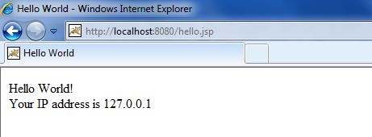
如果我们要在页面正常显示中文，我们需要在 JSP 文件头部添加以下代码：
<%@ page language="java" contentType="text/html; charset=UTF-8"
pageEncoding="UTF-8"%>
接下来我们将以上程序修改为：
<%@ page language="java" contentType="text/html; charset=UTF-8"
pageEncoding="UTF-8"%>
<!DOCTYPE html>
<html>
<head>
<meta charset="utf-8">
<title>菜鸟教程(runoob.com)</title>
</head>
<body>
Hello World!<br/>
<%
out.println("你的 IP 地址 " + request.getRemoteAddr());
%>
</body>
</html>
这样中文就可以正常显示了。
一个声明语句可以声明一个或多个变量、方法，供后面的Java代码使用。在JSP文件中，您必须先声明这些变量和方法然后才能使用它们。
JSP声明的语法格式：
<%! declaration; [ declaration; ]+ ... %>
或者，您也可以编写与其等价的XML语句，就像下面这样：
<jsp:declaration> 代码片段 </jsp:declaration>
程序示例：
<%! int i = 0; %> <%! int a, b, c; %> <%! Circle a = new Circle(2.0); %>
一个JSP表达式中包含的脚本语言表达式，先被转化成String，然后插入到表达式出现的地方。
由于表达式的值会被转化成String，所以您可以在一个文本行中使用表达式而不用去管它是否是HTML标签。
表达式元素中可以包含任何符合Java语言规范的表达式，但是不能使用分号来结束表达式。
JSP表达式的语法格式：
<%= 表达式 %>
同样，您也可以编写与之等价的XML语句：
<jsp:expression> 表达式 </jsp:expression>
程序示例：
<%@ page language="java" contentType="text/html; charset=UTF-8"
pageEncoding="UTF-8"%>
<!DOCTYPE html>
<html>
<head>
<meta charset="utf-8">
<title>菜鸟教程(runoob.com)</title>
</head>
<body>
<p>
今天的日期是: <%= (new java.util.Date()).toLocaleString()%>
</p>
</body>
</html>
运行后得到以下结果：
今天的日期是: 2016-6-25 13:40:07
JSP注释主要有两个作用：为代码作注释以及将某段代码注释掉。
JSP注释的语法格式：
<%@ page language="java" contentType="text/html; charset=UTF-8"
pageEncoding="UTF-8"%>
<!DOCTYPE html>
<html>
<head>
<meta charset="utf-8">
<title>菜鸟教程(runoob.com)</title>
</head>
<body>
<%-- 该部分注释在网页中不会被显示--%>
<p>
今天的日期是: <%= (new java.util.Date()).toLocaleString()%>
</p>
</body>
</html>
运行后得到以下结果：
今天的日期是: 2016-6-25 13:41:26
不同情况下使用注释的语法规则：
| 语法 | 描述 |
|---|---|
| <%-- 注释 --%> | JSP注释，注释内容不会被发送至浏览器甚至不会被编译 |
| <!-- 注释 --> | HTML注释，通过浏览器查看网页源代码时可以看见注释内容 |
| <\% | 代表静态 <%常量 |
| %\> | 代表静态 %> 常量 |
| \' | 在属性中使用的单引号 |
| \" | 在属性中使用的双引号 |
JSP指令用来设置与整个JSP页面相关的属性。
JSP指令语法格式：
<%@ directive attribute="value" %>
这里有三种指令标签：
| 指令 | 描述 |
|---|---|
| <%@ page ... %> | 定义页面的依赖属性，比如脚本语言、error页面、缓存需求等等 |
| <%@ include ... %> | 包含其他文件 |
| <%@ taglib ... %> | 引入标签库的定义，可以是自定义标签 |
JSP行为标签使用XML语法结构来控制servlet引擎。它能够动态插入一个文件，重用JavaBean组件，引导用户去另一个页面，为Java插件产生相关的HTML等等。
行为标签只有一种语法格式，它严格遵守XML标准：
<jsp:action_name attribute="value" />
行为标签基本上是一些预先就定义好的函数，下表罗列出了一些可用的JSP行为标签：：
| 语法 | 描述 |
|---|---|
| jsp:include | 用于在当前页面中包含静态或动态资源 |
| jsp:useBean | 寻找和初始化一个JavaBean组件 |
| jsp:setProperty | 设置 JavaBean组件的值 |
| jsp:getProperty | 将 JavaBean组件的值插入到 output中 |
| jsp:forward | 从一个JSP文件向另一个文件传递一个包含用户请求的request对象 |
| jsp:plugin | 用于在生成的HTML页面中包含Applet和JavaBean对象 |
| jsp:element | 动态创建一个XML元素 |
| jsp:attribute | 定义动态创建的XML元素的属性 |
| jsp:body | 定义动态创建的XML元素的主体 |
| jsp:text | 用于封装模板数据 |
JSP 支持九个自动定义的变量，江湖人称隐含对象，它们是在 JSP 页面中自动可用的对象，无需额外的声明或初始化。
这九个隐含对象的简介见下表：
| 对象 | 描述 |
|---|---|
| request | HttpServletRequest类的实例，代表 HTTP 请求的对象，包含客户端发送到服务器的信息，如表单数据、URL参数等。 |
| response | HttpServletResponse类的实例，代表 HTTP 响应的对象，用于向客户端发送数据和响应。 |
| out | JspWriter类的实例，用于向客户端输出文本内容的对象，通常用于生成HTML。 |
| session | HttpSession类的实例，代表用户会话的对象，可用于存储和检索用户特定的数据，跨多个页面。 |
| application | ServletContext类的实例，代表 Web 应用程序的上下文，可以用于存储和检索全局应用程序数据。 |
| config | ServletConfig类的实例，包含有关当前 JSP 页面的配置信息，例如初始化参数。 |
| pageContext | PageContext类的实例，提供对JSP页面所有对象以及命名空间的访问 |
| page | 类似于 Java 类中的 this 关键字，代表当前 JSP 页面的实例，可以用于调用页面的方法。 |
| exception | exception 类的对象，代表发生错误的 JSP 页面中对应的异常对象，用于处理 JSP 页面中的异常情况，可用于捕获和处理页面中发生的异常。 |
JSP提供对Java语言的全面支持。您可以在JSP程序中使用Java API甚至建立Java代码块，包括判断语句和循环语句等等。
if…else 块，请看下面这个例子：
<%@ page language="java" contentType="text/html; charset=UTF-8"
pageEncoding="UTF-8"%>
<%! int day = 3; %>
<!DOCTYPE html>
<html>
<head>
<meta charset="utf-8">
<title>菜鸟教程(runoob.com)</title>
</head>
<body>
<h3>IF...ELSE 实例</h3>
<% if (day == 1 || day == 7) { %>
<p>今天是周末</p>
<% } else { %>
<p>今天不是周末</p>
<% } %>
</body>
</html>
运行后得到以下结果：
IF...ELSE 实例 今天不是周末
现在来看看switch…case块，与if…else块有很大的不同，它使用out.println()，并且整个都装在脚本程序的标签中，就像下面这样：
<%@ page language="java" contentType="text/html; charset=UTF-8"
pageEncoding="UTF-8"%>
<%! int day = 3; %>
<!DOCTYPE html>
<html>
<head>
<meta charset="utf-8">
<title>菜鸟教程(runoob.com)</title>
</head>
<body>
<h3>SWITCH...CASE 实例</h3>
<%
switch(day) {
case 0:
out.println("星期天");
break;
case 1:
out.println("星期一");
break;
case 2:
out.println("星期二");
break;
case 3:
out.println("星期三");
break;
case 4:
out.println("星期四");
break;
case 5:
out.println("星期五");
break;
default:
out.println("星期六");
}
%>
</body>
</html>
浏览器访问，运行后得出以下结果：
SWITCH...CASE 实例 星期三
在JSP程序中可以使用Java的三个基本循环类型：for，while，和 do…while。
让我们来看看for循环的例子，以下输出的不同字体大小的"菜鸟教程"：
<%@ page language="java" contentType="text/html; charset=UTF-8"
pageEncoding="UTF-8"%>
<%! int fontSize; %>
<!DOCTYPE html>
<html>
<head>
<meta charset="utf-8">
<title>菜鸟教程(runoob.com)</title>
</head>
<body>
<h3>For 循环实例</h3>
<%for ( fontSize = 1; fontSize <= 3; fontSize++){ %>
<font color="green" size="<%= fontSize %>">
菜鸟教程
</font><br />
<%}%>
</body>
</html>
运行后得到以下结果：
将上例改用 while 循环来写：
<%@ page language="java" contentType="text/html; charset=UTF-8"
pageEncoding="UTF-8"%>
<%! int fontSize=0; %>
<!DOCTYPE html>
<html>
<head>
<meta charset="utf-8">
<title>菜鸟教程(runoob.com)</title>
</head>
<body>
<h3>While 循环实例</h3>
<%while ( fontSize <= 3){ %>
<font color="green" size="<%= fontSize %>">
菜鸟教程
</font><br />
<%fontSize++;%>
<%}%>
</body>
</html>
浏览器访问，输出结果为（fontSize 初始化为0，所以多输出了一行）：JSP支持所有Java逻辑和算术运算符。
下表罗列出了JSP常见运算符，优先级从高到底：
| 类别 | 操作符 | 结合性 |
|---|---|---|
| 后缀 | () [] . (点运算符) | 左到右 |
| 一元 | ++ - - ! ~ | 右到左 |
| 可乘性 | * / % | 左到右 |
| 可加性 | + - | 左到右 |
| 移位 | >> >>> << | 左到右 |
| 关系 | > >= < <= | 左到右 |
| 相等/不等 | == != | 左到右 |
| 位与 | & | 左到右 |
| 位异或 | ^ | 左到右 |
| 位或 | | | 左到右 |
| 逻辑与 | && | 左到右 |
| 逻辑或 | || | 左到右 |
| 条件判断 | ?: | 右到左 |
| 赋值 | = += -= *= /= %= >>= <<= &= ^= |= | 右到左 |
| 逗号 | , | 左到右 |
JSP语言定义了以下几个字面量：
JSP指令用来设置整个JSP页面相关的属性，如网页的编码方式和脚本语言。
语法格式如下：
<%@ directive attribute="value" %>
指令可以有很多个属性，它们以键值对的形式存在，并用逗号隔开。
JSP中的三种指令标签：
| 指令 | 描述 |
|---|---|
| <%@ page ... %> | 定义网页依赖属性，比如脚本语言、error页面、缓存需求等等 |
| <%@ include ... %> | 包含其他文件 |
| <%@ taglib ... %> | 引入标签库的定义 |
Page指令为容器提供当前页面的使用说明。一个JSP页面可以包含多个page指令。
Page指令的语法格式：
<%@ page attribute="value" %>
等价的XML格式：
<jsp:directive.page attribute="value" />
下表列出与Page指令相关的属性：
| 属性 | 描述 |
|---|---|
| buffer | 指定out对象使用缓冲区的大小 |
| autoFlush | 控制out对象的 缓存区 |
| contentType | 指定当前JSP页面的MIME类型和字符编码 |
| errorPage | 指定当JSP页面发生异常时需要转向的错误处理页面 |
| isErrorPage | 指定当前页面是否可以作为另一个JSP页面的错误处理页面 |
| extends | 指定servlet从哪一个类继承 |
| import | 导入要使用的Java类 |
| info | 定义JSP页面的描述信息 |
| isThreadSafe | 指定对JSP页面的访问是否为线程安全 |
| language | 定义JSP页面所用的脚本语言，默认是Java |
| session | 指定JSP页面是否使用session |
| isELIgnored | 指定是否执行EL表达式 |
| isScriptingEnabled | 确定脚本元素能否被使用 |
JSP可以通过include指令来包含其他文件。被包含的文件可以是JSP文件、HTML文件或文本文件。包含的文件就好像是该JSP文件的一部分，会被同时编译执行。
Include指令的语法格式如下：
<%@ include file="文件相对 url 地址" %>
include 指令中的文件名实际上是一个相对的 URL 地址。
如果您没有给文件关联一个路径，JSP编译器默认在当前路径下寻找。
等价的XML语法：
<jsp:directive.include file="文件相对 url 地址" />
JSP API允许用户自定义标签，一个自定义标签库就是自定义标签的集合。
Taglib指令引入一个自定义标签集合的定义，包括库路径、自定义标签。
Taglib指令的语法：
<%@ taglib uri="uri" prefix="prefixOfTag" %>
uri属性确定标签库的位置，prefix属性指定标签库的前缀。
等价的XML语法：
<jsp:directive.taglib uri="uri" prefix="prefixOfTag" />
与JSP指令元素不同的是，JSP动作元素在请求处理阶段起作用。JSP动作元素是用XML语法写成的。
利用JSP动作可以动态地插入文件、重用JavaBean组件、把用户重定向到另外的页面、为Java插件生成HTML代码。
动作元素只有一种语法，它符合XML标准：
<jsp:action_name attribute="value" />
动作元素基本上都是预定义的函数，JSP规范定义了一系列的标准动作，它用JSP作为前缀，可用的标准动作元素如下：
| 语法 | 描述 |
|---|---|
| jsp:include | 在页面被请求的时候引入一个文件。 |
| jsp:useBean | 寻找或者实例化一个JavaBean。 |
| jsp:setProperty | 设置JavaBean的属性。 |
| jsp:getProperty | 输出某个JavaBean的属性。 |
| jsp:forward | 把请求转到一个新的页面。 |
| jsp:plugin | 根据浏览器类型为Java插件生成OBJECT或EMBED标记。 |
| jsp:element | 定义动态XML元素 |
| jsp:attribute | 设置动态定义的XML元素属性。 |
| jsp:body | 设置动态定义的XML元素内容。 |
| jsp:text | 在JSP页面和文档中使用写入文本的模板 |
所有的动作要素都有两个属性：id属性和scope属性。
id属性是动作元素的唯一标识，可以在JSP页面中引用。动作元素创建的id值可以通过PageContext来调用。
该属性用于识别动作元素的生命周期。 id属性和scope属性有直接关系，scope属性定义了相关联id对象的寿命。 scope属性有四个可能的值： (a) page, (b)request, (c)session, 和 (d) application。
<jsp:include>动作元素用来包含静态和动态的文件。该动作把指定文件插入正在生成的页面。语法格式如下：
<jsp:include page="相对 URL 地址" flush="true" />
前面已经介绍过include指令，它是在JSP文件被转换成Servlet的时候引入文件，而这里的jsp:include动作不同，插入文件的时间是在页面被请求的时候。
以下是include动作相关的属性列表。
| 属性 | 描述 |
|---|---|
| page | 包含在页面中的相对URL地址。 |
| flush | 布尔属性，定义在包含资源前是否刷新缓存区。 |
以下我们定义了两个文件 date.jsp 和 main.jsp，代码如下所示：
date.jsp文件代码：
<%@ page language="java" contentType="text/html; charset=UTF-8"
pageEncoding="UTF-8"%>
<p>
今天的日期是: <%= (new java.util.Date()).toLocaleString()%>
</p>
main.jsp文件代码：
<%@ page language="java" contentType="text/html; charset=UTF-8"
pageEncoding="UTF-8"%>
<!DOCTYPE html>
<html>
<head>
<meta charset="utf-8">
<title>菜鸟教程(runoob.com)</title>
</head>
<body>
<h2>include 动作实例</h2>
<jsp:include page="date.jsp" flush="true" />
</body>
</html>
现在将以上两个文件放在服务器的根目录下，访问main.jsp文件。显示结果如下：
include 动作实例 今天的日期是: 2016-6-25 14:08:17
jsp:useBean 动作用来加载一个将在JSP页面中使用的JavaBean。
这个功能非常有用，因为它使得我们可以发挥 Java 组件复用的优势。
jsp:useBean动作最简单的语法为：
<jsp:useBean id="name" class="package.class" />
在类载入后，我们既可以通过 jsp:setProperty 和 jsp:getProperty 动作来修改和检索bean的属性。
以下是useBean动作相关的属性列表。
| 属性 | 描述 |
|---|---|
| class | 指定Bean的完整包名。 |
| type | 指定将引用该对象变量的类型。 |
| beanName | 通过 java.beans.Beans 的 instantiate() 方法指定Bean的名字。 |
在给出具体实例前，让我们先来看下 jsp:setProperty 和 jsp:getProperty 动作元素：
jsp:setProperty用来设置已经实例化的Bean对象的属性，有两种用法。首先，你可以在jsp:useBean元素的外面（后面）使用jsp:setProperty，如下所示：
<jsp:useBean id="myName" ... /> ... <jsp:setProperty name="myName" property="someProperty" .../>
此时，不管jsp:useBean是找到了一个现有的Bean，还是新创建了一个Bean实例，jsp:setProperty都会执行。第二种用法是把jsp:setProperty放入jsp:useBean元素的内部，如下所示：
<jsp:useBean id="myName" ... > ... <jsp:setProperty name="myName" property="someProperty" .../> </jsp:useBean>
此时，jsp:setProperty只有在新建Bean实例时才会执行，如果是使用现有实例则不执行jsp:setProperty。
jsp:setProperty动作有下面四个属性,如下表：
| 属性 | 描述 |
|---|---|
| name | name属性是必需的。它表示要设置属性的是哪个Bean。 |
| property | property属性是必需的。它表示要设置哪个属性。有一个特殊用法：如果property的值是"*"，表示所有名字和Bean属性名字匹配的请求参数都将被传递给相应的属性set方法。 |
| value | value 属性是可选的。该属性用来指定Bean属性的值。字符串数据会在目标类中通过标准的valueOf方法自动转换成数字、boolean、Boolean、 byte、Byte、char、Character。例如，boolean和Boolean类型的属性值（比如"true"）通过 Boolean.valueOf转换，int和Integer类型的属性值（比如"42"）通过Integer.valueOf转换。 value和param不能同时使用，但可以使用其中任意一个。 |
| param | param 是可选的。它指定用哪个请求参数作为Bean属性的值。如果当前请求没有参数，则什么事情也不做，系统不会把null传递给Bean属性的set方法。因此，你可以让Bean自己提供默认属性值，只有当请求参数明确指定了新值时才修改默认属性值。 |
jsp:getProperty动作提取指定Bean属性的值，转换成字符串，然后输出。语法格式如下：
<jsp:useBean id="myName" ... /> ... <jsp:getProperty name="myName" property="someProperty" .../>
下表是与getProperty相关联的属性：
| 属性 | 描述 |
|---|---|
| name | 要检索的Bean属性名称。Bean必须已定义。 |
| property | 表示要提取Bean属性的值 |
以下实例我们使用了Bean:
package com.runoob.main;
public class TestBean {
private String message = "菜鸟教程";
public String getMessage() {
return(message);
}
public void setMessage(String message) {
this.message = message;
}
}
编译以上实例文件 TestBean.java ：
$ javac TestBean.java
编译完成后会在当前目录下生成一个 TestBean.class 文件， 将该文件拷贝至当前 JSP 项目的 WebContent/WEB-INF/classes/com/runoob/main 下( com/runoob/main 包路径，没有需要手动创建)。
下面是一个 Eclipse 中目录结构图：
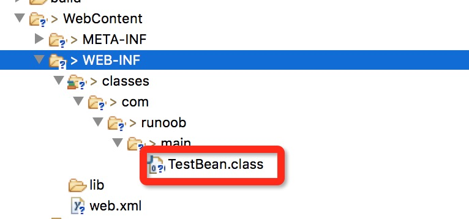
下面是一个很简单的例子，它的功能是装载一个Bean，然后设置/读取它的message属性。
现在让我们在main.jsp文件中调用该Bean:
<%@ page language="java" contentType="text/html; charset=UTF-8"
pageEncoding="UTF-8"%>
<!DOCTYPE html>
<html>
<head>
<meta charset="utf-8">
<title>菜鸟教程(runoob.com)</title>
</head>
<body>
<h2>Jsp 使用 JavaBean 实例</h2>
<jsp:useBean id="test" class="com.runoob.main.TestBean" />
<jsp:setProperty name="test"
property="message"
value="菜鸟教程..." />
<p>输出信息....</p>
<jsp:getProperty name="test" property="message" />
</body>
</html>
浏览器访问，执行以上文件，输出如下所示：
jsp:forward动作把请求转到另外的页面。jsp:forward标记只有一个属性page。语法格式如下所示：
<jsp:forward page="相对 URL 地址" />
以下是forward相关联的属性：
| 属性 | 描述 |
|---|---|
| page | page属性包含的是一个相对URL。page的值既可以直接给出，也可以在请求的时候动态计算，可以是一个JSP页面或者一个 Java Servlet. |
以下实例我们使用了两个文件，分别是： date.jsp 和 main.jsp。
date.jsp 文件代码如下：
<%@ page language="java" contentType="text/html; charset=UTF-8"
pageEncoding="UTF-8"%>
<p>
今天的日期是: <%= (new java.util.Date()).toLocaleString()%>
</p>
main.jsp文件代码：
<%@ page language="java" contentType="text/html; charset=UTF-8"
pageEncoding="UTF-8"%>
<!DOCTYPE html>
<html>
<head>
<meta charset="utf-8">
<title>菜鸟教程(runoob.com)</title>
</head>
<body>
<h2>forward 动作实例</h2>
<jsp:forward page="date.jsp" />
</body>
</html>
现在将以上两个文件放在服务器的根目录下，访问main.jsp文件。显示结果如下：
今天的日期是: 2016-6-25 14:37:25
jsp:plugin动作用来根据浏览器的类型，插入通过Java插件 运行Java Applet所必需的OBJECT或EMBED元素。
如果需要的插件不存在，它会下载插件，然后执行Java组件。 Java组件可以是一个applet或一个JavaBean。
plugin动作有多个对应HTML元素的属性用于格式化Java 组件。param元素可用于向Applet 或 Bean 传递参数。
以下是使用plugin 动作元素的典型实例:
<jsp:plugin type="applet" codebase="dirname" code="MyApplet.class"
width="60" height="80">
<jsp:param name="fontcolor" value="red" />
<jsp:param name="background" value="black" />
<jsp:fallback>
Unable to initialize Java Plugin
</jsp:fallback>
</jsp:plugin>
如果你有兴趣可以尝试使用applet来测试jsp:plugin动作元素，<fallback>元素是一个新元素，在组件出现故障的错误时发送给用户错误信息。
<jsp:element> 、 <jsp:attribute>、 <jsp:body>动作元素动态定义XML元素。动态是非常重要的，这就意味着XML元素在编译时是动态生成的而非静态。
以下实例动态定义了XML元素：
<%@ page language="java" contentType="text/html; charset=UTF-8"
pageEncoding="UTF-8"%>
<!DOCTYPE html>
<html>
<head>
<meta charset="utf-8">
<title>菜鸟教程(runoob.com)</title>
</head>
<body>
<jsp:element name="xmlElement">
<jsp:attribute name="xmlElementAttr">
属性值
</jsp:attribute>
<jsp:body>
XML 元素的主体
</jsp:body>
</jsp:element>
</body>
</html>
浏览器访问以下页面，输出结果如下所示：
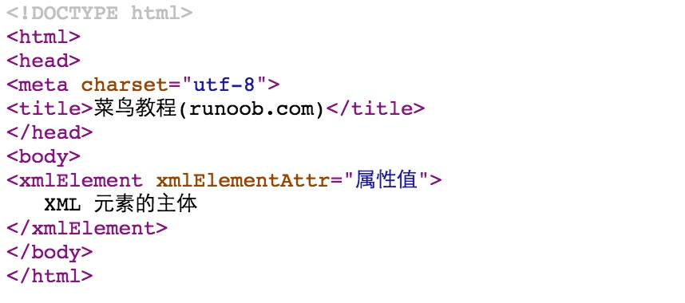
<jsp:text>动作元素允许在JSP页面和文档中使用写入文本的模板，语法格式如下：
<jsp:text>模板数据</jsp:text>
以上文本模板不能包含重复元素，只能包含文本和EL表达式（注：EL表达式将在后续章节中介绍）。请注意，在XML文件中，您不能使用表达式如 ${whatever > 0}，因为>符号是非法的。 你可以使用 ${whatever gt 0}表达式或者嵌入在一个CDATA部分的值。
<jsp:text><![CDATA[<br>]]></jsp:text>
如果你需要在 XHTML 中声明 DOCTYPE,必须使用到<jsp:text>动作元素，实例如下：
<jsp:text><![CDATA[<!DOCTYPE html
PUBLIC "-//W3C//DTD XHTML 1.0 Strict//EN"
"DTD/xhtml1-strict.dtd">]]>
</jsp:text>
<head><title>jsp:text action</title></head>
<body>
<books><book><jsp:text>
Welcome to JSP Programming
</jsp:text></book></books>
</body>
</html>
你可以对以上实例尝试使用<jsp:text>及不使用该动作元素执行结果的区别。
JSP隐式对象是JSP容器为每个页面提供的Java对象，开发者可以直接使用它们而不用显式声明。JSP隐式对象也被称为预定义变量。
JSP所支持的九大隐式对象：
| 对象 | 描述 |
|---|---|
| request | HttpServletRequest 接口的实例 |
| response | HttpServletResponse 接口的实例 |
| out | JspWriter类的实例，用于把结果输出至网页上 |
| session | HttpSession类的实例 |
| application | ServletContext类的实例，与应用上下文有关 |
| config | ServletConfig类的实例 |
| pageContext | PageContext类的实例，提供对JSP页面所有对象以及命名空间的访问 |
| page | 类似于Java类中的this关键字 |
| Exception | Exception类的对象，代表发生错误的JSP页面中对应的异常对象 |
request对象是javax.servlet.http.HttpServletRequest 类的实例。每当客户端请求一个JSP页面时，JSP引擎就会制造一个新的request对象来代表这个请求。
request对象提供了一系列方法来获取HTTP头信息，cookies，HTTP方法等等。
response对象是javax.servlet.http.HttpServletResponse类的实例。当服务器创建request对象时会同时创建用于响应这个客户端的response对象。
response对象也定义了处理HTTP头模块的接口。通过这个对象，开发者们可以添加新的cookies，时间戳，HTTP状态码等等。
out对象是 javax.servlet.jsp.JspWriter 类的实例，用来在response对象中写入内容。
最初的JspWriter类对象根据页面是否有缓存来进行不同的实例化操作。可以在page指令中使用buffered='false'属性来轻松关闭缓存。
JspWriter类包含了大部分java.io.PrintWriter类中的方法。不过，JspWriter新增了一些专为处理缓存而设计的方法。还有就是，JspWriter类会抛出IOExceptions异常，而PrintWriter不会。
下表列出了我们将会用来输出boolean，char，int，double，String，object等类型数据的重要方法：
| 方法 | 描述 |
|---|---|
| out.print(dataType dt) | 输出Type类型的值 |
| out.println(dataType dt) | 输出Type类型的值然后换行 |
| out.flush() | 刷新输出流 |
session对象是 javax.servlet.http.HttpSession 类的实例。和Java Servlets中的session对象有一样的行为。
session对象用来跟踪在各个客户端请求间的会话。
application对象直接包装了servlet的ServletContext类的对象，是javax.servlet.ServletContext 类的实例。
这个对象在JSP页面的整个生命周期中都代表着这个JSP页面。这个对象在JSP页面初始化时被创建，随着jspDestroy()方法的调用而被移除。
通过向application中添加属性，则所有组成您web应用的JSP文件都能访问到这些属性。
config对象是 javax.servlet.ServletConfig 类的实例，直接包装了servlet的ServletConfig类的对象。
这个对象允许开发者访问Servlet或者JSP引擎的初始化参数，比如文件路径等。
以下是config对象的使用方法，不是很重要，所以不常用：
config.getServletName();
它返回包含在<servlet-name>元素中的servlet名字，注意，<servlet-name>元素在 WEB-INF\web.xml 文件中定义。
pageContext对象是javax.servlet.jsp.PageContext 类的实例，用来代表整个JSP页面。
这个对象主要用来访问页面信息，同时过滤掉大部分实现细节。
这个对象存储了request对象和response对象的引用。application对象，config对象，session对象，out对象可以通过访问这个对象的属性来导出。
pageContext对象也包含了传给JSP页面的指令信息，包括缓存信息，ErrorPage URL,页面scope等。
PageContext类定义了一些字段，包括PAGE_SCOPE，REQUEST_SCOPE，SESSION_SCOPE， APPLICATION_SCOPE。它也提供了40余种方法，有一半继承自javax.servlet.jsp.JspContext 类。
其中一个重要的方法就是 removeAttribute()，它可接受一个或两个参数。比如，pageContext.removeAttribute("attrName") 移除四个scope中相关属性，但是下面这种方法只移除特定 scope 中的相关属性：
pageContext.removeAttribute("attrName", PAGE_SCOPE);
这个对象就是页面实例的引用。它可以被看做是整个JSP页面的代表。
page 对象就是this对象的同义词。
exception 对象包装了从先前页面中抛出的异常信息。它通常被用来产生对出错条件的适当响应。
当浏览器请求一个网页时，它会向网络服务器发送一系列不能被直接读取的信息，因为这些信息是作为HTTP信息头的一部分来传送的。您可以查阅HTTP协议来获得更多的信息。
下表列出了浏览器端信息头的一些重要内容，在以后的网络编程中将会经常见到这些信息：
| 信息 | 描述 |
|---|---|
| Accept | 指定浏览器或其他客户端可以处理的MIME类型。它的值通常为 image/png 或 image/jpeg |
| Accept-Charset | 指定浏览器要使用的字符集。比如 ISO-8859-1 |
| Accept-Encoding | 指定编码类型。它的值通常为 gzip 或compress |
| Accept-Language | 指定客户端首选语言，servlet会优先返回以当前语言构成的结果集，如果servlet支持这种语言的话。比如 en，en-us，ru等等 |
| Authorization | 在访问受密码保护的网页时识别不同的用户 |
| Connection | 表明客户端是否可以处理HTTP持久连接。持久连接允许客户端或浏览器在一个请求中获取多个文件。Keep-Alive 表示启用持久连接 |
| Content-Length | 仅适用于POST请求，表示 POST 数据的字节数 |
| Cookie | 返回先前发送给浏览器的cookies至服务器 |
| Host | 指出原始URL中的主机名和端口号 |
| If-Modified-Since | 表明只有当网页在指定的日期被修改后客户端才需要这个网页。 服务器发送304码给客户端，表示没有更新的资源 |
| If-Unmodified-Since | 与If-Modified-Since相反， 只有文档在指定日期后仍未被修改过，操作才会成功 |
| Referer | 标志着所引用页面的URL。比如，如果你在页面1，然后点了个链接至页面2，那么页面1的URL就会包含在浏览器请求页面2的信息头中 |
| User-Agent | 用来区分不同浏览器或客户端发送的请求，并对不同类型的浏览器返回不同的内容 |
request对象是javax.servlet.http.HttpServletRequest类的实例。每当客户端请求一个页面时，JSP引擎就会产生一个新的对象来代表这个请求。
request对象提供了一系列方法来获取HTTP信息头，包括表单数据，cookies，HTTP方法等等。
接下来将会介绍一些在JSP编程中常用的获取HTTP信息头的方法。详细内容请见下表：
| 序号 | 方法& 描述 |
|---|---|
| 1 | Cookie[] getCookies() 返回客户端所有的Cookie的数组 |
| 2 | Enumeration getAttributeNames() 返回request对象的所有属性名称的集合 |
| 3 | Enumeration getHeaderNames() 返回所有HTTP头的名称集合 |
| 4 | Enumeration getParameterNames() 返回请求中所有参数的集合 |
| 5 | HttpSession getSession() 返回request对应的session对象，如果没有，则创建一个 |
| 6 | HttpSession getSession(boolean create) 返回request对应的session对象，如果没有并且参数create为true，则返回一个新的session对象 |
| 7 | Locale getLocale() 返回当前页的Locale对象，可以在response中设置 |
| 8 | Object getAttribute(String name) 返回名称为name的属性值，如果不存在则返回null。 |
| 9 | ServletInputStream getInputStream() 返回请求的输入流 |
| 10 | String getAuthType() 返回认证方案的名称，用来保护servlet，比如 "BASIC" 或者 "SSL" 或 null 如果 JSP没设置保护措施 |
| 11 | String getCharacterEncoding() 返回request的字符编码集名称 |
| 12 | String getContentType() 返回request主体的MIME类型，若未知则返回null |
| 13 | String getContextPath() 返回request URI中指明的上下文路径 |
| 14 | String getHeader(String name) 返回name指定的信息头 |
| 15 | String getMethod() 返回此request中的HTTP方法，比如 GET,，POST，或PUT |
| 16 | String getParameter(String name) 返回此request中name指定的参数，若不存在则返回null |
| 17 | String getPathInfo() 返回任何额外的与此request URL相关的路径 |
| 18 | String getProtocol() 返回此request所使用的协议名和版本 |
| 19 | String getQueryString() 返回此 request URL包含的查询字符串 |
| 20 | String getRemoteAddr() 返回客户端的IP地址 |
| 21 | String getRemoteHost() 返回客户端的完整名称 |
| 22 | String getRemoteUser() 返回客户端通过登录认证的用户，若用户未认证则返回null |
| 23 | String getRequestURI() 返回request的URI |
| 24 | String getRequestedSessionId() 返回request指定的session ID |
| 25 | String getServletPath() 返回所请求的servlet路径 |
| 26 | String[] getParameterValues(String name) 返回指定名称的参数的所有值，若不存在则返回null |
| 27 | boolean isSecure() 返回request是否使用了加密通道，比如HTTPS |
| 28 | int getContentLength() 返回request主体所包含的字节数，若未知的返回-1 |
| 29 | int getIntHeader(String name) 返回指定名称的request信息头的值 |
| 30 | int getServerPort() 返回服务器端口号 |
在这个例子中，我们会使用HttpServletRequest类的getHeaderNames()方法来读取HTTP信息头。这个方法以枚举的形式返回当前HTTP请求的头信息。
获取Enumeration对象后，用标准的方式来遍历Enumeration对象，用hasMoreElements()方法来确定什么时候停止，用nextElement()方法来获得每个参数的名字。
<%@ page language="java" contentType="text/html; charset=UTF-8"
pageEncoding="UTF-8"%>
<%@ page import="java.io.*,java.util.*" %>
<!DOCTYPE html>
<html>
<head>
<meta charset="utf-8">
<title>菜鸟教程(runoob.com)</title>
</head>
<body>
<h2>HTTP 头部请求实例</h2>
<table width="100%" border="1" align="center">
<tr bgcolor="#949494">
<th>Header Name</th><th>Header Value(s)</th>
</tr>
<%
Enumeration headerNames = request.getHeaderNames();
while(headerNames.hasMoreElements()) {
String paramName = (String)headerNames.nextElement();
out.print("<tr><td>" + paramName + "</td>\n");
String paramValue = request.getHeader(paramName);
out.println("<td> " + paramValue + "</td></tr>\n");
}
%>
</table>
</body>
</html>
访问main.jsp，将会得到以下结果：
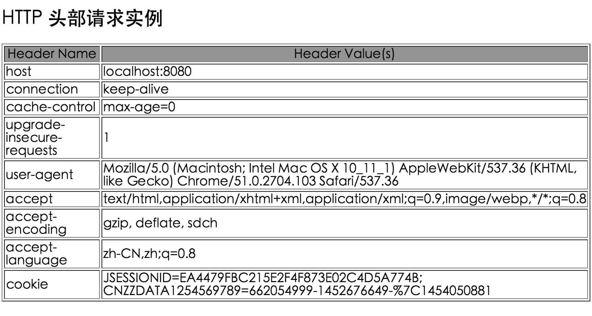
您可以在上面代码中尝试HttpServletRequest类的其它方法。
Response响应对象主要将JSP容器处理后的结果传回到客户端。可以通过response变量设置HTTP的状态和向客户端发送数据，如Cookie、HTTP文件头信息等。
一个典型的响应看起来就像下面这样：
HTTP/1.1 200 OK Content-Type: text/html Header2: ... ... HeaderN: ... (空行) <!doctype ...> <html> <head>...</head> <body> ... </body> </html>
状态行包含HTTP版本信息，比如HTTP/1.1，一个状态码，比如200，还有一个非常短的信息对应着状态码，比如OK。
下表摘要出了HTTP1.1响应头中最有用的部分，在网络编程中您将会经常见到它们：
| 响应头 | 描述 |
|---|---|
| Allow | 指定服务器支持的request方法（GET，POST等等） |
| Cache-Control | 指定响应文档能够被安全缓存的情况。通常取值为 public，private 或no-cache 等等。 Public意味着文档可缓存，Private意味着文档只为单用户服务并且只能使用私有缓存。No-cache 意味着文档不被缓存。 |
| Connection | 命令浏览器是否要使用持久的HTTP连接。close值 命令浏览器不使用持久HTTP连接，而keep-alive 意味着使用持久化连接。 |
| Content-Disposition | 让浏览器要求用户将响应以给定的名称存储在磁盘中 |
| Content-Encoding | 指定传输时页面的编码规则 |
| Content-Language | 表述文档所使用的语言，比如en， en-us,，ru等等 |
| Content-Length | 表明响应的字节数。只有在浏览器使用持久化 (keep-alive) HTTP 连接时才有用 |
| Content-Type | 表明文档使用的MIME类型 |
| Expires | 指明啥时候过期并从缓存中移除 |
| Last-Modified | 指明文档最后修改时间。客户端可以 缓存文档并且在后续的请求中提供一个 If-Modified-Since请求头 |
| Location | 在300秒内，包含所有的有一个状态码的响应地址，浏览器会自动重连然后检索新文档 |
| Refresh | 指明浏览器每隔多久请求更新一次页面。 |
| Retry-After | 与503 (Service Unavailable)一起使用来告诉用户多久后请求将会得到响应 |
| Set-Cookie | 指明当前页面对应的cookie |
response 对象是 javax.servlet.http.HttpServletResponse 类的一个实例。就像服务器会创建request对象一样，它也会创建一个客户端响应。
response对象定义了处理创建HTTP信息头的接口。通过使用这个对象，开发者们可以添加新的cookie或时间戳，还有HTTP状态码等等。
下表列出了用来设置HTTP响应头的方法，这些方法由HttpServletResponse 类提供：
| S.N. | 方法 & 描述 |
|---|---|
| 1 | String encodeRedirectURL(String url) 对sendRedirect()方法使用的URL进行编码 |
| 2 | String encodeURL(String url) 将URL编码，回传包含Session ID的URL |
| 3 | boolean containsHeader(String name) 返回指定的响应头是否存在 |
| 4 | boolean isCommitted() 返回响应是否已经提交到客户端 |
| 5 | void addCookie(Cookie cookie) 添加指定的cookie至响应中 |
| 6 | void addDateHeader(String name, long date) 添加指定名称的响应头和日期值 |
| 7 | void addHeader(String name, String value) 添加指定名称的响应头和值 |
| 8 | void addIntHeader(String name, int value) 添加指定名称的响应头和int值 |
| 9 | void flushBuffer() 将任何缓存中的内容写入客户端 |
| 10 | void reset() 清除任何缓存中的任何数据，包括状态码和各种响应头 |
| 11 | void resetBuffer() 清除基本的缓存数据，不包括响应头和状态码 |
| 12 | void sendError(int sc) 使用指定的状态码向客户端发送一个出错响应，然后清除缓存 |
| 13 | void sendError(int sc, String msg) 使用指定的状态码和消息向客户端发送一个出错响应 |
| 14 | void sendRedirect(String location) 使用指定的URL向客户端发送一个临时的间接响应 |
| 15 | void setBufferSize(int size) 设置响应体的缓存区大小 |
| 16 | void setCharacterEncoding(String charset) 指定响应的编码集（MIME字符集），例如UTF-8 |
| 17 | void setContentLength(int len) 指定HTTP servlets中响应的内容的长度，此方法用来设置 HTTP Content-Length 信息头 |
| 18 | void setContentType(String type) 设置响应的内容的类型，如果响应还未被提交的话 |
| 19 | void setDateHeader(String name, long date) 使用指定名称和日期设置响应头的名称和日期 |
| 20 | void setHeader(String name, String value) 使用指定名称和值设置响应头的名称和内容 |
| 21 | void setIntHeader(String name, int value) 指定 int 类型的值到 name 标头 |
| 22 | void setLocale(Locale loc) 设置响应的语言环境，如果响应尚未被提交的话 |
| 23 | void setStatus(int sc) 设置响应的状态码 |
接下来的例子使用setIntHeader()方法和setRefreshHeader()方法来模拟一个数字时钟：
<%@ page language="java" contentType="text/html; charset=UTF-8"
pageEncoding="UTF-8"%>
<%@ page import="java.io.*,java.util.*" %>
<!DOCTYPE html>
<html>
<head>
<meta charset="utf-8">
<title>菜鸟教程(runoob.com)</title>
</head>
<body>
<h2>自动刷新实例</h2>
<%
// 设置每隔5秒自动刷新
response.setIntHeader("Refresh", 5);
// 获取当前时间
Calendar calendar = new GregorianCalendar();
String am_pm;
int hour = calendar.get(Calendar.HOUR);
int minute = calendar.get(Calendar.MINUTE);
int second = calendar.get(Calendar.SECOND);
if(calendar.get(Calendar.AM_PM) == 0)
am_pm = "AM";
else
am_pm = "PM";
String CT = hour+":"+ minute +":"+ second +" "+ am_pm;
out.println("当前时间: " + CT + "\n");
%>
</body>
</html>
将以上代码保存为main.jsp，然后通过浏览器访问它。它将会每隔5秒显示一下系统当前时间。
我们可以看下以下 Gif 演示图：
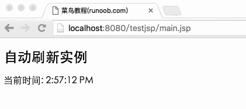
您也可以自己动手修改以上代码，试试使用其他的方法，将能得到更深的体会。
HTTP请求与HTTP响应的格式相近，都有着如下结构：
举例来说，一个服务器响应头看起来就像下面这样：
HTTP/1.1 200 OK Content-Type: text/html Header2: ... ... HeaderN: ... (Blank Line) <!doctype ...> <html> <head>...</head> <body> ... </body> </html>状态行包含HTTP版本，一个状态码，和状态码相对应的短消息。
下表列出了可能会从服务器返回的HTTP状态码和与之关联的消息：
| 状态码 | 消息 | 描述 |
|---|---|---|
| 100 | Continue | 只有一部分请求被服务器接收，但只要没被服务器拒绝，客户端就会延续这个请求 |
| 101 | Switching Protocols | 服务器交换机协议 |
| 200 | OK | 请求被确认 |
| 201 | Created | 请求时完整的，新的资源被创建 |
| 202 | Accepted | 请求被接受，但未处理完 |
| 203 | Non-authoritative Information | |
| 204 | No Content | |
| 205 | Reset Content | |
| 206 | Partial Content | |
| 300 | Multiple Choices | 一个超链接表，用户可以选择一个超链接并访问，最大支持5个超链接 |
| 301 | Moved Permanently | 被请求的页面已经移动到了新的URL下 |
| 302 | Found | 被请求的页面暂时性地移动到了新的URL下 |
| 303 | See Other | 被请求的页面可以在一个不同的URL下找到 |
| 304 | Not Modified | |
| 305 | Use Proxy | |
| 306 | Unused | 已经不再使用此状态码，但状态码被保留 |
| 307 | Temporary Redirect | 被请求的页面暂时性地移动到了新的URL下 |
| 400 | Bad Request | 服务器无法识别请求 |
| 401 | Unauthorized | 被请求的页面需要用户名和密码 |
| 402 | Payment Required | 目前还不能使用此状态码 |
| 403 | Forbidden | 禁止访问所请求的页面 |
| 404 | Not Found | 服务器无法找到所请求的页面 |
| 405 | Method Not Allowed | 请求中所指定的方法不被允许 |
| 406 | Not Acceptable | 服务器只能创建一个客户端无法接受的响应 |
| 407 | Proxy Authentication Required | 在请求被服务前必须认证一个代理服务器 |
| 408 | Request Timeout | 请求时间超过了服务器所能等待的时间，连接被断开 |
| 409 | Conflict | 请求有矛盾的地方 |
| 410 | Gone | 被请求的页面不再可用 |
| 411 | Length Required | "Content-Length"没有被定义，服务器拒绝接受请求 |
| 412 | Precondition Failed | 请求的前提条件被服务器评估为false |
| 413 | Request Entity Too Large | 因为请求的实体太大，服务器拒绝接受请求 |
| 414 | Request-url Too Long | 服务器拒绝接受请求，因为URL太长。多出现在把"POST"请求转换为"GET"请求时所附带的大量查询信息 |
| 415 | Unsupported Media Type | 服务器拒绝接受请求，因为媒体类型不被支持 |
| 417 | Expectation Failed | |
| 500 | Internal Server Error | 请求不完整，服务器遇见了出乎意料的状况 |
| 501 | Not Implemented | 请求不完整，服务器不提供所需要的功能 |
| 502 | Bad Gateway | 请求不完整，服务器从上游服务器接受了一个无效的响应 |
| 503 | Service Unavailable | 请求不完整，服务器暂时重启或关闭 |
| 504 | Gateway Timeout | 网关超时 |
| 505 | HTTP Version Not Supported | 服务器不支持所指定的HTTP版本 |
下表列出了HttpServletResponse 类中用来设置状态码的方法：
| S.N. | 方法 & 描述 |
|---|---|
| 1 | public void setStatus ( int statusCode ) 此方法可以设置任意的状态码。如果您的响应包含一个特殊的状态码和一个文档，请确保在用PrintWriter返回任何内容前调用setStatus方法 |
| 2 | public void sendRedirect(String url) 此方法产生302响应，同时产生一个 Location 头告诉URL 一个新的文档 |
| 3 | public void sendError(int code, String message) 此方法将一个状态码(通常为 404)和一个短消息，自动插入HTML文档中并发回给客户端 |
接下来的例子将会发送407错误码给浏览器，然后浏览器将会告诉您"Need authentication!!!"。
<html> <head> <title>Setting HTTP Status Code</title> </head> <body> <% // 设置错误代码，并说明原因 response.sendError(407, "Need authentication!!!" ); %> </body> </html>
访问以上JSP页面，将会得到以下结果：
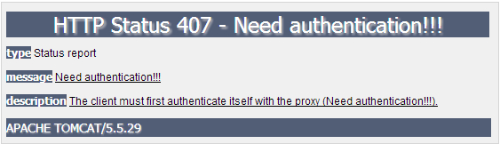
您也可以试试使用其他的状态码，看会不会得到什么意想不到结果。
我们在浏览网页的时候，经常需要向服务器提交信息，并让后台程序处理。浏览器中使用 GET 和 POST 方法向服务器提交数据。
GET方法将请求的编码信息添加在网址后面，网址与编码信息通过"?"号分隔。如下所示：
http://www.runoob.com/hello?key1=value1&key2=value2
GET方法是浏览器默认传递参数的方法，一些敏感信息，如密码等建议不使用GET方法。
用get时，传输数据的大小有限制 （注意不是参数的个数有限制），最大为1024字节。
一些敏感信息，如密码等我们可以通过POST方法传递，POST提交数据是隐式的。
POST提交数据是不可见的，GET是通过在url里面传递的（可以看一下你浏览器的地址栏）。
JSP使用getParameter()来获得传递的参数，getInputStream()方法用来处理客户端的二进制数据流的请求。
getParameter(): 使用 request.getParameter() 方法来获取表单参数的值。
getParameterValues(): 获得如checkbox类（名字相同，但值有多个）的数据。 接收数组变量 ，如checkbox类型
getParameterNames():该方法可以取得所有变量的名称，该方法返回一个 Enumeration。
getInputStream():调用此方法来读取来自客户端的二进制数据流。
以下是一个简单的URL,并使用GET方法来传递URL中的参数：
http://localhost:8080/testjsp/main.jsp?name=菜鸟教程&url=http://ww.runoob.com
testjsp 为项目地址。
以下是 main.jsp 文件的JSP程序用于处理客户端提交的表单数据，我们使用getParameter()方法来获取提交的数据：
<%@ page language="java" contentType="text/html; charset=UTF-8"
pageEncoding="UTF-8"%>
<%@ page import="java.io.*,java.util.*" %>
<!DOCTYPE html>
<html>
<head>
<meta charset="utf-8">
<title>菜鸟教程(runoob.com)</title>
</head>
<body>
<h1>使用 GET 方法读取数据</h1>
<ul>
<li><p><b>站点名:</b>
<%= request.getParameter("name")%>
</p></li>
<li><p><b>网址:</b>
<%= request.getParameter("url")%>
</p></li>
</ul>
</body>
</html>
接下来我们通过浏览器访问 http://localhost:8080/testjsp/main.jsp?name=菜鸟教程&url=http://ww.runoob.com 输出结果如下所示：
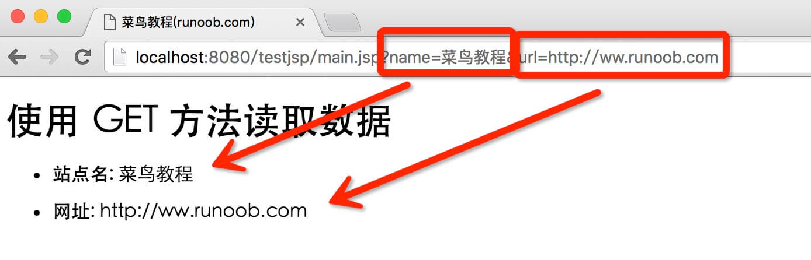
以下是一个简单的 HTML 表单，该表单通过GET方法将客户端数据提交 到 main.jsp 文件中：
<!DOCTYPE html> <html> <head> <meta charset="utf-8"> <title>菜鸟教程(runoob.com)</title> </head> <body> <form action="main.jsp" method="GET"> 站点名: <input type="text" name="name"> <br /> 网址: <input type="text" name="url" /> <input type="submit" value="提交" /> </form> </body> </html>
将以上HTML代码保存到test.htm文件中。 将该文件放置于当前jsp项目的 WebContent 目录下（与 main.jsp 同一个目录）。
通过访问 http://localhost:8080/testjsp/test.html 提交表单数据到 main.jsp 文件，演示 Gif 图如下所示：
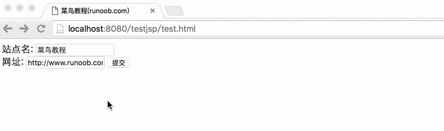
在 "站点名" 与 "网址" 两个表单中填入信息，并点击 "提交" 按钮，它将输出结果。
接下来让我们使用POST方法来传递表单数据，修改main.jsp与Hello.htm文件代码，如下所示：
main.jsp文件代码：
<%@ page language="java" contentType="text/html; charset=UTF-8"
pageEncoding="UTF-8"%>
<%@ page import="java.io.*,java.util.*" %>
<!DOCTYPE html>
<html>
<head>
<meta charset="utf-8">
<title>菜鸟教程(runoob.com)</title>
</head>
<body>
<h1>使用 POST 方法读取数据</h1>
<ul>
<li><p><b>站点名:</b>
<%
// 解决中文乱码的问题
String name = new String((request.getParameter("name")).getBytes("ISO-8859-1"),"UTF-8");
%>
<%=name%>
</p></li>
<li><p><b>网址:</b>
<%= request.getParameter("url")%>
</p></li>
</ul>
</body>
</html>
代码中我们使用 new String((request.getParameter("name")).getBytes("ISO-8859-1"),"UTF-8")来转换编码，防止中文乱码的发生。
以下是test.htm修改后的代码：
<!DOCTYPE html> <html> <head> <meta charset="utf-8"> <title>菜鸟教程(runoob.com)</title> </head> <body> <form action="main.jsp" method="POST"> 站点名: <input type="text" name="name"> <br /> 网址: <input type="text" name="url" /> <input type="submit" value="提交" /> </form> </body> </html>
通过访问 http://localhost:8080/testjsp/test.html 提交表单数据到 main.jsp 文件，演示 Gif 图如下所示：
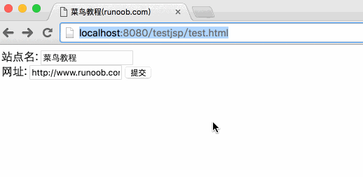
复选框 checkbox 可以传递一个甚至多个数据。
以下是一个简单的HTML代码，并将代码保存在test.htm文件中：
<!DOCTYPE html> <html> <head> <meta charset="utf-8"> <title>菜鸟教程(runoob.com)</title> </head> <body> <form action="main.jsp" method="POST" target="_blank"> <input type="checkbox" name="google" checked="checked" /> Google <input type="checkbox" name="runoob" /> 菜鸟教程 <input type="checkbox" name="taobao" checked="checked" /> 淘宝 <input type="submit" value="选择网站" /> </form> </body> </html>
以上代码在浏览器访问如下所示：
以下为main.jsp文件代码，用于处理复选框数据：
<%@ page language="java" contentType="text/html; charset=UTF-8"
pageEncoding="UTF-8"%>
<%@ page import="java.io.*,java.util.*" %>
<!DOCTYPE html>
<html>
<head>
<meta charset="utf-8">
<title>菜鸟教程(runoob.com)</title>
</head>
<body>
<h1>从复选框中读取数据</h1>
<ul>
<li><p><b>Google 是否选中:</b>
<%= request.getParameter("google")%>
</p></li>
<li><p><b>菜鸟教程是否选中:</b>
<%= request.getParameter("runoob")%>
</p></li>
<li><p><b>淘宝是否选中:</b>
<%= request.getParameter("taobao")%>
</p></li>
</ul>
</body>
</html>
通过访问 http://localhost:8080/testjsp/test.html 提交表单数据到 main.jsp 文件，演示 Gif 图如下所示：
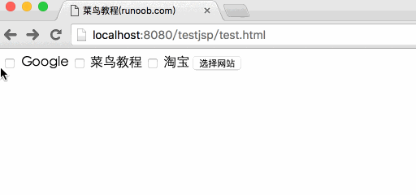
以下我们将使用 HttpServletRequest 的 getParameterNames() 来读取所有表单参数,该方法可以取得所有变量的名称，该方法返回一个枚举。
一旦我们有了一个 Enumeration（枚举），我们就可以调用 hasMoreElements() 方法来确定是否还有元素，以及使用nextElement（）方法来获得每个参数的名称。
<%@ page language="java" contentType="text/html; charset=UTF-8"
pageEncoding="UTF-8"%>
<%@ page import="java.io.*,java.util.*" %>
<!DOCTYPE html>
<html>
<head>
<meta charset="utf-8">
<title>菜鸟教程(runoob.com)</title>
</head>
<body>
<h1>读取所有表单参数</h1>
<table width="100%" border="1" align="center">
<tr bgcolor="#949494">
<th>参数名</th><th>参数值</th>
</tr>
<%
Enumeration paramNames = request.getParameterNames();
while(paramNames.hasMoreElements()) {
String paramName = (String)paramNames.nextElement();
out.print("<tr><td>" + paramName + "</td>\n");
String paramValue = request.getParameter(paramName);
out.println("<td> " + paramValue + "</td></tr>\n");
}
%>
</table>
</body>
</html>
以下是test.htm文件的内容:
<!DOCTYPE html>
<html>
<head>
<meta charset="utf-8">
<title>菜鸟教程(runoob.com)</title>
</head>
<body>
<form action="main.jsp" method="POST" target="_blank">
<input type="checkbox" name="google" checked="checked" /> Google
<input type="checkbox" name="runoob" /> 菜鸟教程
<input type="checkbox" name="taobao" checked="checked" />
淘宝
<input type="submit" value="选择网站" />
</form>
</body>
</html>
现在我们通过浏览器访问 test.htm 文件提交数据，输出结果如下：
通过访问 http://localhost:8080/testjsp/test.html 提交表单数据到 main.jsp 文件，演示 Gif 图如下所示：
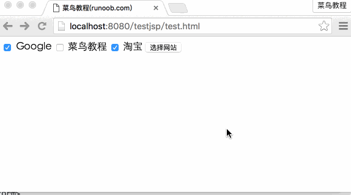
你可以尝试使用以上的JSP代码读取其它对象，如文本框，单选按钮或下拉框等等其他形式的数据。
JSP 和 Servlet 中的过滤器都是 Java 类。
过滤器可以动态地拦截请求和响应，以变换或使用包含在请求或响应中的信息。
可以将一个或多个过滤器附加到一个 Servlet 或一组 Servlet。过滤器也可以附加到 JavaServer Pages (JSP) 文件和 HTML 页面。
过滤器是可用于 Servlet 编程的 Java 类，可以实现以下目的：
根据规范建议的各种类型的过滤器：
过滤器通过 Web 部署描述符（web.xml）中的 XML 标签来声明，然后映射到您的应用程序的部署描述符中的 Servlet 名称或 URL 模式。
当 Web 容器启动 Web 应用程序时，它会为您在部署描述符中声明的每一个过滤器创建一个实例。
Filter 的执行顺序与在 web.xml 配置文件中的配置顺序一致，一般把 Filter 配置在所有的 Servlet 之前。
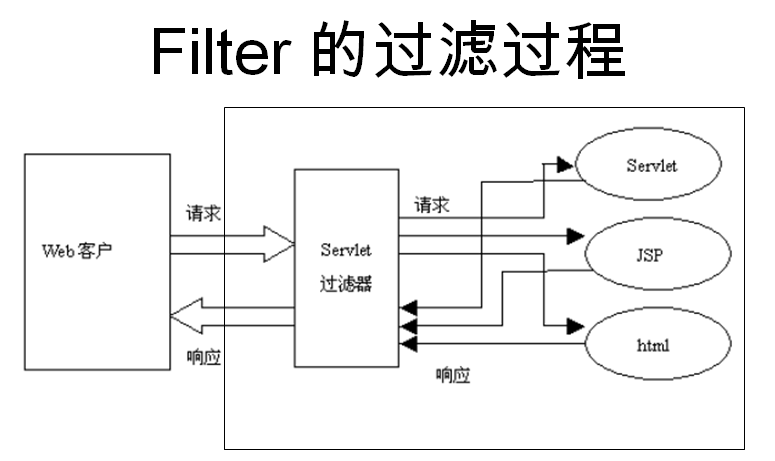
过滤器是一个实现了 javax.servlet.Filter 接口的 Java 类。javax.servlet.Filter 接口定义了三个方法：
| 序号 | 方法 & 描述 |
|---|---|
| 1 | public void doFilter (ServletRequest, ServletResponse, FilterChain) 该方法完成实际的过滤操作，当客户端的请求与过滤器设置的 URL 匹配时，Servlet 容器将先调用过滤器的 doFilter 方法。FilterChain 用于访问后续过滤器。 |
| 2 | public void init(FilterConfig filterConfig) web 应用程序启动时，web 服务器将创建Filter 的实例对象，并调用其init方法，读取web.xml配置，完成对象的初始化功能，从而为后续的用户请求作好拦截的准备工作（filter对象只会创建一次，init方法也只会执行一次）。开发人员通过init方法的参数，可获得代表当前filter配置信息的FilterConfig对象。 |
| 3 | public void destroy() Servlet容器在销毁过滤器实例前调用该方法，在该方法中释放Servlet过滤器占用的资源。 |
Filter 的 init 方法中提供了一个 FilterConfig 对象。
如 web.xml 文件配置如下：
<filter> <filter-name>LogFilter</filter-name> <filter-class>com.runoob.test.LogFilter</filter-class> <init-param> <param-name>Site</param-name> <param-value>菜鸟教程</param-value> </init-param> </filter>
在 init 方法使用 FilterConfig 对象获取参数：
public void init(FilterConfig config) throws ServletException {
// 获取初始化参数
String site = config.getInitParameter("Site");
// 输出初始化参数
System.out.println("网站名称: " + site);
}
以下是 Servlet 过滤器的实例，将输出网站名称和地址。本实例让您对 Servlet 过滤器有基本的了解，您可以使用相同的概念编写更复杂的过滤器应用程序：
//导入必需的 java 库
import javax.servlet.*;
import java.util.*;
//实现 Filter 类
public class LogFilter implements Filter {
public void init(FilterConfig config) throws ServletException {
// 获取初始化参数
String site = config.getInitParameter("Site");
// 输出初始化参数
System.out.println("网站名称: " + site);
}
public void doFilter(ServletRequest request, ServletResponse response, FilterChain chain) throws java.io.IOException, ServletException {
// 输出站点名称
System.out.println("站点网址：http://www.runoob.com");
// 把请求传回过滤链
chain.doFilter(request,response);
}
public void destroy( ){
/* 在 Filter 实例被 Web 容器从服务移除之前调用 */
}
}
DisplayHeader.java 文件代码如下：
//导入必需的 java 库
import java.io.IOException;
import java.io.PrintWriter;
import java.util.Enumeration;
import javax.servlet.ServletException;
import javax.servlet.annotation.WebServlet;
import javax.servlet.http.HttpServlet;
import javax.servlet.http.HttpServletRequest;
import javax.servlet.http.HttpServletResponse;
@WebServlet("/DisplayHeader")
//扩展 HttpServlet 类
public class DisplayHeader extends HttpServlet {
// 处理 GET 方法请求的方法
public void doGet(HttpServletRequest request, HttpServletResponse response) throws ServletException, IOException
{
// 设置响应内容类型
response.setContentType("text/html;charset=UTF-8");
PrintWriter out = response.getWriter();
String title = "HTTP Header 请求实例 - 菜鸟教程实例";
String docType =
"<!DOCTYPE html> \n";
out.println(docType +
"<html>\n" +
"<head><meta charset=\"utf-8\"><title>" + title + "</title></head>\n"+
"<body bgcolor=\"#f0f0f0\">\n" +
"<h1 align=\"center\">" + title + "</h1>\n" +
"<table width=\"100%\" border=\"1\" align=\"center\">\n" +
"<tr bgcolor=\"#949494\">\n" +
"<th>Header 名称</th><th>Header 值</th>\n"+
"</tr>\n");
Enumeration headerNames = request.getHeaderNames();
while(headerNames.hasMoreElements()) {
String paramName = (String)headerNames.nextElement();
out.print("<tr><td>" + paramName + "</td>\n");
String paramValue = request.getHeader(paramName);
out.println("<td> " + paramValue + "</td></tr>\n");
}
out.println("</table>\n</body></html>");
}
// 处理 POST 方法请求的方法
public void doPost(HttpServletRequest request, HttpServletResponse response) throws ServletException, IOException {
doGet(request, response);
}
}
定义过滤器，然后映射到一个 URL 或 Servlet，这与定义 Servlet，然后映射到一个 URL 模式方式大致相同。在部署描述符文件 web.xml 中为 filter 标签创建下面的条目：
<?xml version="1.0" encoding="UTF-8"?>
<web-app>
<filter>
<filter-name>LogFilter</filter-name>
<filter-class>com.runoob.test.LogFilter</filter-class>
<init-param>
<param-name>Site</param-name>
<param-value>菜鸟教程</param-value>
</init-param>
</filter>
<filter-mapping>
<filter-name>LogFilter</filter-name>
<url-pattern>/*</url-pattern>
</filter-mapping>
<servlet>
<!-- 类名 -->
<servlet-name>DisplayHeader</servlet-name>
<!-- 所在的包 -->
<servlet-class>com.runoob.test.DisplayHeader</servlet-class>
</servlet>
<servlet-mapping>
<servlet-name>DisplayHeader</servlet-name>
<!-- 访问的网址 -->
<url-pattern>/TomcatTest/DisplayHeader</url-pattern>
</servlet-mapping>
</web-app>
上述过滤器适用于所有的 Servlet，因为我们在配置中指定 /* 。如果您只想在少数的 Servlet 上应用过滤器，您可以指定一个特定的 Servlet 路径。
现在试着以常用的方式调用任何 Servlet，您将会看到在 Web 服务器中生成的日志。您也可以使用 Log4J 记录器来把上面的日志记录到一个单独的文件中。
接下来我们访问这个实例地址 http://localhost:8080/TomcatTest/DisplayHeader, 然后在控制台看下输出内容，如下所示：
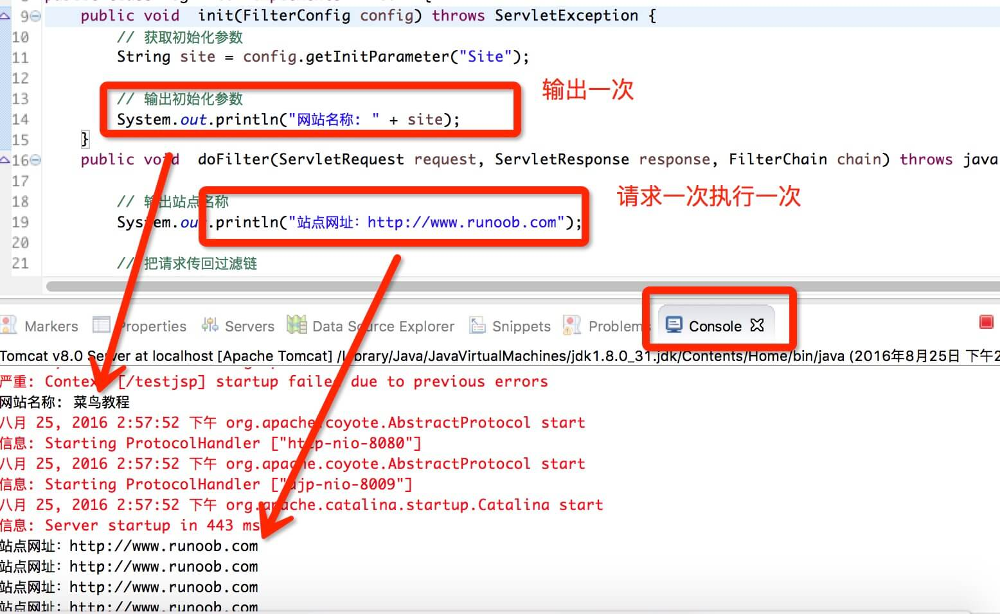
Web 应用程序可以根据特定的目的定义若干个不同的过滤器。假设您定义了两个过滤器 AuthenFilter 和 LogFilter。您需要创建一个如下所述的不同的映射，其余的处理与上述所讲解的大致相同：
<filter> <filter-name>LogFilter</filter-name> <filter-class>com.runoob.test.LogFilter</filter-class> <init-param> <param-name>test-param</param-name> <param-value>Initialization Paramter</param-value> </init-param> </filter> <filter> <filter-name>AuthenFilter</filter-name> <filter-class>com.runoob.test.AuthenFilter</filter-class> <init-param> <param-name>test-param</param-name> <param-value>Initialization Paramter</param-value> </init-param> </filter> <filter-mapping> <filter-name>LogFilter</filter-name> <url-pattern>/*</url-pattern> </filter-mapping> <filter-mapping> <filter-name>AuthenFilter</filter-name> <url-pattern>/*</url-pattern> </filter-mapping>
web.xml 中的 filter-mapping 元素的顺序决定了 Web 容器应用过滤器到 Servlet 的顺序。若要反转过滤器的顺序，您只需要在 web.xml 文件中反转 filter-mapping 元素即可。
例如，上面的实例将先应用 LogFilter，然后再应用 AuthenFilter，但是下面的实例将颠倒这个顺序：
<filter-mapping> <filter-name>AuthenFilter</filter-name> <url-pattern>/*</url-pattern> </filter-mapping> <filter-mapping> <filter-name>LogFilter</filter-name> <url-pattern>/*</url-pattern> </filter-mapping>
<filter>指定一个过滤器。
<filter-name>用于为过滤器指定一个名字，该元素的内容不能为空。<filter-class>元素用于指定过滤器的完整的限定类名。<init-param>元素用于为过滤器指定初始化参数，它的子元素<param-name>指定参数的名字，<param-value>指定参数的值。FilterConfig接口对象来访问初始化参数。<filter-mapping>元素用于设置一个 Filter 所负责拦截的资源。一个Filter拦截的资源可通过两种方式来指定：Servlet 名称和资源访问的请求路径
<filter-name>子元素用于设置filter的注册名称。该值必须是在<filter>元素中声明过的过滤器的名字<url-pattern>设置 filter 所拦截的请求路径(过滤器关联的URL样式)<servlet-name>指定过滤器所拦截的Servlet名称。<dispatcher>指定过滤器所拦截的资源被 Servlet 容器调用的方式，可以是REQUEST,INCLUDE,FORWARD和ERROR之一，默认REQUEST。用户可以设置多个<dispatcher>子元素用来指定 Filter 对资源的多种调用方式进行拦截。<dispatcher>子元素可以设置的值及其意义
REQUEST：当用户直接访问页面时，Web容器将会调用过滤器。如果目标资源是通过RequestDispatcher的include()或forward()方法访问时，那么该过滤器就不会被调用。INCLUDE：如果目标资源是通过RequestDispatcher的include()方法访问时，那么该过滤器将被调用。除此之外，该过滤器不会被调用。FORWARD：如果目标资源是通过RequestDispatcher的forward()方法访问时，那么该过滤器将被调用，除此之外，该过滤器不会被调用。ERROR：如果目标资源是通过声明式异常处理机制调用时，那么该过滤器将被调用。除此之外，过滤器不会被调用。Cookie 是存储在客户机的文本文件，它们保存了大量轨迹信息。在 Servlet 技术基础上，JSP 显然能够提供对 HTTP cookie 的支持。
通常有三个步骤来识别回头客：
本章节将会传授您如何去设置或重设 cookie 的方法，还有如何访问它们及如何删除它们。
JSP Cookie 处理需要对中文进行编码与解码，方法如下：
String str = java.net.URLEncoder.encode("中文", "UTF-8"); //编码 String str = java.net.URLDecoder.decode("编码后的字符串","UTF-8"); // 解码
Cookie 通常在 HTTP 信息头中设置（虽然 JavaScript 能够直接在浏览器中设置 cookie）。在 JSP 中，设置一个 cookie 需要发送如下的信息头给服务器：
HTTP/1.1 200 OK
Date: Fri, 04 Feb 2015 21:03:38 GMT
Server: Apache/1.3.9 (UNIX) PHP/4.0b3
Set-Cookie: name=runoob; expires=Friday, 04-Feb-17 22:03:38 GMT;
path=/; domain=runoob.com
Connection: close
Content-Type: text/html
正如您所见，Set-Cookie 信息头包含一个键值对，一个 GMT（格林尼治标准）时间，一个路径，一个域名。键值对会被编码为URL。有效期域是个指令，告诉浏览器在什么时候之后就可以清除这个 cookie。
如果浏览器被配置成可存储 cookie，那么它将会保存这些信息直到过期。如果用户访问的任何页面匹配了 cookie 中的路径和域名，那么浏览器将会重新将这个 cookie 发回给服务器。浏览器端的信息头长得就像下面这样：
GET / HTTP/1.0 Connection: Keep-Alive User-Agent: Mozilla/4.6 (X11; I; Linux 2.2.6-15apmac ppc) Host: zink.demon.co.uk:1126 Accept: image/gif, */* Accept-Encoding: gzip Accept-Language: en Accept-Charset: iso-8859-1,*,utf-8 Cookie: name=xyz
JSP 脚本通过 request 对象中的 getCookies() 方法来访问这些 cookie，这个方法会返回一个 Cookie 对象的数组。
下表列出了 Cookie 对象中常用的方法：
| 序号 | 方法 & 描述 |
|---|---|
| 1 | public void setDomain(String pattern) |
使用 JSP 设置 cookie 包含三个步骤：
(1)创建一个 cookie 对象： 调用 cookie 的构造函数，使用一个 cookie 名称和值做参数，它们都是字符串。
Cookie cookie = new Cookie("key","value");
请务必牢记，名称和值中都不能包含空格或者如下的字符：
[ ] ( ) = , " / ? @ : ;
(2) 设置有效期：调用 setMaxAge() 函数表明 cookie 在多长时间（以秒为单位）内有效。下面的操作将有效期设为了 24 小时。
cookie.setMaxAge(60*60*24);
(3) 将 cookie 发送至 HTTP 响应头中：调用 response.addCookie() 函数来向 HTTP 响应头中添加 cookie。
response.addCookie(cookie);
main.jsp 文件代码如下所示：
<%@ page language="java" contentType="text/html; charset=UTF-8"
pageEncoding="UTF-8"%>
<%@ page import="java.net.*" %>
<%
// 编码，解决中文乱码
String str = URLEncoder.encode(request.getParameter("name"),"utf-8");
// 设置 name 和 url cookie
Cookie name = new Cookie("name",
str);
Cookie url = new Cookie("url",
request.getParameter("url"));
// 设置cookie过期时间为24小时。
name.setMaxAge(60*60*24);
url.setMaxAge(60*60*24);
// 在响应头部添加cookie
response.addCookie( name );
response.addCookie( url );
%>
<html>
<head>
<title>设置 Cookie</title>
</head>
<body>
<h1>设置 Cookie</h1>
<ul>
<li><p><b>网站名:</b>
<%= request.getParameter("name")%>
</p></li>
<li><p><b>网址:</b>
<%= request.getParameter("url")%>
</p></li>
</ul>
</body>
</html>
以下是一个简单的 HTML 表单通过 GET 方法将客户端数据提交到 main.jsp 文件中，并设置 cookie：
<!DOCTYPE html> <html> <head> <meta charset="utf-8"> <title>菜鸟教程(runoob.com)</title> </head> <body> <form action="main.jsp" method=GET> 站点名: <input type="text" name="name"> <br /> 网址: <input type="text" name="url" /> <input type="submit" value="提交" /> </form> </body> </html>
将以上 HTML 代码保存到 test.htm 文件中。
将该文件放置于当前 jsp 项目的 WebContent 目录下（与 main.jsp 同一个目录）。
通过访问 http://localhost:8080/testjsp/test.html 提交表单数据到 main.jsp 文件，演示 Gif 图如下所示：
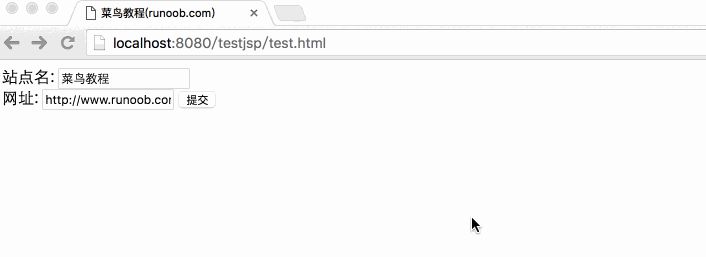
试着输入 "站点名" 和 "网址"，然后点击提交按钮，它将会在您的屏幕中显示 "站点名" 和 "网址"，并且设置 "站点名" 和 "网址" 的两个 cookie。
想要读取 cookie，您就需要调用 request.getCookies() 方法来获得一个 javax.servlet.http.Cookie 对象的数组，然后遍历这个数组，使用 getName() 方法和 getValue() 方法来获取每一个 cookie 的名称和值。
让我们来读取上个例子中的cookie, 以下为 cookie.jsp 文件代码：
<%@ page language="java" contentType="text/html; charset=UTF-8"
pageEncoding="UTF-8"%>
<%@ page import="java.net.*" %>
<!DOCTYPE html>
<html>
<head>
<meta http-equiv="Content-Type" content="text/html; charset=UTF-8">
<title>获取 Cookie</title>
</head>
<body>
<%
Cookie cookie = null;
Cookie[] cookies = null;
// 获取 cookies 的数据,是一个数组
cookies = request.getCookies();
if( cookies != null ){
out.println("<h2> 查找 Cookie 名与值</h2>");
for (int i = 0; i < cookies.length; i++){
cookie = cookies[i];
out.print("参数名 : " + cookie.getName());
out.print("<br>");
out.print("参数值: " + URLDecoder.decode(cookie.getValue(), "utf-8") +" <br>");
out.print("------------------------------------<br>");
}
}else{
out.println("<h2>没有发现 Cookie</h2>");
}
%>
</body>
</html>
浏览器访问后，输出结果为：
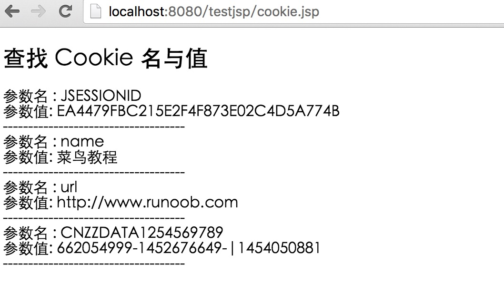
删除 cookie 非常简单。如果您想要删除一个 cookie，按照下面给的步骤来做就行了：
下面的程序删除一个名为 "name" 的 cookie，当您第二次运行 cookie.jsp时，name 将会为 null。
<%@ page language="java" contentType="text/html; charset=UTF-8"
pageEncoding="UTF-8"%>
<%@ page import="java.net.*" %>
<!DOCTYPE html>
<html>
<head>
<meta http-equiv="Content-Type" content="text/html; charset=UTF-8">
<title>获取 Cookie</title>
</head>
<body>
<%
Cookie cookie = null;
Cookie[] cookies = null;
// 获取当前域名下的cookies，是一个数组
cookies = request.getCookies();
if( cookies != null ){
out.println("<h2> 查找 Cookie 名与值</h2>");
for (int i = 0; i < cookies.length; i++){
cookie = cookies[i];
if((cookie.getName( )).compareTo("name") == 0 ){
cookie.setMaxAge(0);
response.addCookie(cookie);
out.print("删除 Cookie: " +
cookie.getName( ) + "<br/>");
}
out.print("参数名 : " + cookie.getName());
out.print("<br>");
out.print("参数值: " + URLDecoder.decode(cookie.getValue(), "utf-8") +" <br>");
out.print("------------------------------------<br>");
}
}else{
out.println("<h2>没有发现 Cookie</h2>");
}
%>
</body>
</html>
通过浏览器访问，输出结果为：
再次访问 http://localhost:8080/testjsp/cookie.jsp，将会得到如下结果：
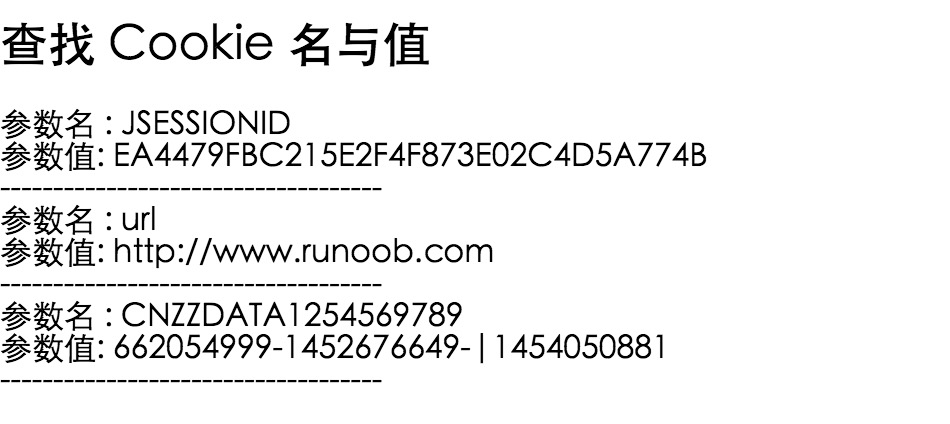
可以看到名为 "name" 的 cookie 已经不见了。
您也可以手动在浏览器中删除 cookie。IE 浏览器通过点击 Tools 菜单项，然后选择 Internet Options，点击 Delete Cookies，就能删除所有 cookie 。
HTTP是无状态协议，这意味着每次客户端检索网页时，都要单独打开一个服务器连接，因此服务器不会记录下先前客户端请求的任何信息。
有三种方法来维持客户端与服务器的会话：
网络服务器可以指定一个唯一的session ID作为cookie来代表每个客户端，用来识别这个客户端接下来的请求。
这可能不是一种有效的方式，因为很多时候浏览器并不一定支持cookie，所以我们不建议使用这种方法来维持会话。
一个网络服务器可以发送一个隐藏的HTML表单域和一个唯一的session ID，就像下面这样：
<input type="hidden" name="sessionid" value="12345">
这个条目意味着，当表单被提交时，指定的名称和值将会自动包含在GET或POST数据中。每当浏览器发送一个请求，session_id的值就可以用来保存不同浏览器的轨迹。
这种方式可能是一种有效的方式，但点击<A HREF>标签中的超链接时不会产生表单提交事件，因此隐藏表单域也不支持通用会话跟踪。
您可以在每个URL后面添加一些额外的数据来区分会话，服务器能够根据这些数据来关联session标识符。
举例来说，http://w3cschool.cc/file.htm;sessionid=12345， session标识符为sessionid=12345，服务器可以用这个数据来识别客户端。
相比而言，重写URL是更好的方式来，就算浏览器不支持cookies也能工作，但缺点是您必须为每个URL动态指定session ID，就算这是个简单的HTML页面。
除了以上几种方法外，JSP利用servlet提供的HttpSession接口来识别一个用户，存储这个用户的所有访问信息。
默认情况下，JSP允许会话跟踪，一个新的HttpSession对象将会自动地为新的客户端实例化。禁止会话跟踪需要显式地关掉它，通过将page指令中session属性值设为false来实现，就像下面这样：
<%@ page session="false" %>
JSP引擎将隐含的session对象暴露给开发者。由于提供了session对象，开发者就可以方便地存储或检索数据。
下表列出了session对象的一些重要方法：
| S.N. | 方法 & 描述 |
|---|---|
| 1 | public Object getAttribute(String name) |
这个例子描述了如何使用HttpSession对象来获取创建时间和最后一次访问时间。我们将会为request对象关联一个新的session对象，如果这个对象尚未存在的话。
<%@ page language="java" contentType="text/html; charset=UTF-8"
pageEncoding="UTF-8"%>
<%@ page import="java.io.*,java.util.*" %>
<%
// 获取session创建时间
Date createTime = new Date(session.getCreationTime());
// 获取最后访问页面的时间
Date lastAccessTime = new Date(session.getLastAccessedTime());
String title = "再次访问菜鸟教程实例";
Integer visitCount = new Integer(0);
String visitCountKey = new String("visitCount");
String userIDKey = new String("userID");
String userID = new String("ABCD");
// 检测网页是否有新的访问用户
if (session.isNew()){
title = "访问菜鸟教程实例";
session.setAttribute(userIDKey, userID);
session.setAttribute(visitCountKey, visitCount);
} else {
visitCount = (Integer)session.getAttribute(visitCountKey);
visitCount += 1;
userID = (String)session.getAttribute(userIDKey);
session.setAttribute(visitCountKey, visitCount);
}
%>
<html>
<head>
<title>Session 跟踪</title>
</head>
<body>
<h1>Session 跟踪</h1>
<table border="1" align="center">
<tr bgcolor="#949494">
<th>Session 信息</th>
<th>值</th>
</tr>
<tr>
<td>id</td>
<td><% out.print( session.getId()); %></td>
</tr>
<tr>
<td>创建时间</td>
<td><% out.print(createTime); %></td>
</tr>
<tr>
<td>最后访问时间</td>
<td><% out.print(lastAccessTime); %></td>
</tr>
<tr>
<td>用户 ID</td>
<td><% out.print(userID); %></td>
</tr>
<tr>
<td>访问次数</td>
<td><% out.print(visitCount); %></td>
</tr>
</table>
</body>
</html>
试着访问 http://localhost:8080/testjsp/main.jsp ，第一次运行时将会得到如下结果：
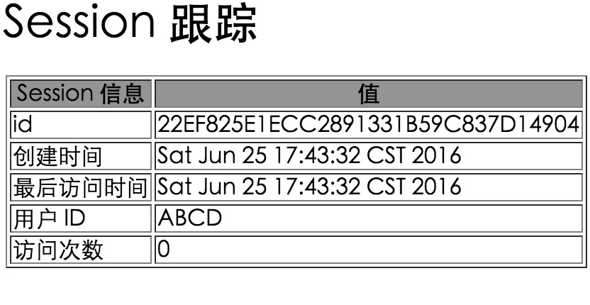
再次访问，将会得到如下结果：
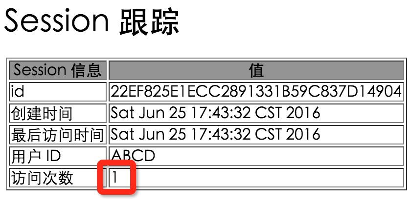
当处理完一个用户的会话数据后，您可以有如下选择：
调用public void removeAttribute(String name) 方法来移除指定的属性。
调用public void invalidate() 方法来使整个session无效。
调用 public void setMaxInactiveInterval(int interval) 方法来设置session超时。
支持servlet2.4版本的服务器，可以调用 logout()方法来登出用户，并且使所有相关的session无效。
如果使用的是Tomcat，可以向下面这样配置web.xml文件：
<session-config>
<session-timeout>15</session-timeout>
</session-config>
超时以分钟为单位，Tomcat中的默认的超时时间是30分钟。
Servlet中的getMaxInactiveInterval( ) 方法以秒为单位返回超时时间。如果在web.xml中配置的是15分钟，则getMaxInactiveInterval( ) 方法将会返回900。
JSP 可以与 HTML form 标签一起使用，来允许用户上传文件到服务器。上传的文件可以是文本文件或图像文件或任何文档。
本章节我们使用 Servlet 来处理文件上传，使用到的文件有：
结构图如下所示：
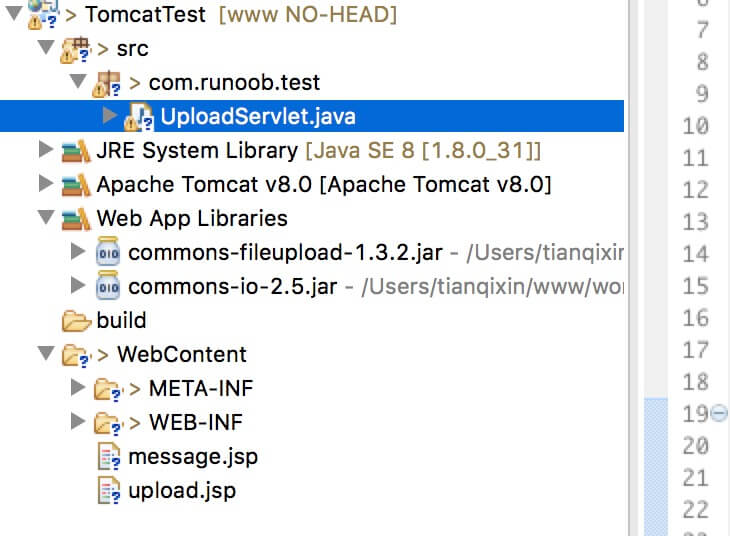
接下来我们详细介绍。
下面的 HTML 代码创建了一个文件上传表单。以下几点需要注意：
upload.jsp 文件代码如下：
<%@ page language="java" contentType="text/html; charset=UTF-8"
pageEncoding="UTF-8"%>
<!DOCTYPE html PUBLIC "-//W3C//DTD HTML 4.01 Transitional//EN"
"http://www.w3.org/TR/html4/loose.dtd">
<html>
<head>
<meta http-equiv="Content-Type" content="text/html; charset=UTF-8">
<title>文件上传实例 - 菜鸟教程</title>
</head>
<body>
<h1>文件上传实例 - 菜鸟教程</h1>
<form method="post" action="/TomcatTest/UploadServlet" enctype="multipart/form-data">
选择一个文件:
<input type="file" name="uploadFile" />
<br/><br/>
<input type="submit" value="上传" />
</form>
</body>
</html>
以下是 UploadServlet 的源代码，同于处理文件上传，在这之前我们先确保依赖包已经引入到项目的 WEB-INF/lib 目录下：
你可以直接下载本站提供的两个依赖包：
UploadServlet 的源代码 如下所示：
package com.runoob.test;
import java.io.File;
import java.io.IOException;
import java.io.PrintWriter;
import java.util.List;
import javax.servlet.ServletException;
import javax.servlet.annotation.WebServlet;
import javax.servlet.http.HttpServlet;
import javax.servlet.http.HttpServletRequest;
import javax.servlet.http.HttpServletResponse;
import org.apache.commons.fileupload.FileItem;
import org.apache.commons.fileupload.disk.DiskFileItemFactory;
import org.apache.commons.fileupload.servlet.ServletFileUpload;
/**
* Servlet implementation class UploadServlet
*/
// 如果不配置 web.xml ，可以使用下面的代码
// @WebServlet("/UploadServlet")
public class UploadServlet extends HttpServlet {
private static final long serialVersionUID = 1L;
// 上传文件存储目录
private static final String UPLOAD_DIRECTORY = "upload";
// 上传配置
private static final int MEMORY_THRESHOLD = 1024 * 1024 * 3; // 3MB
private static final int MAX_FILE_SIZE = 1024 * 1024 * 40; // 40MB
private static final int MAX_REQUEST_SIZE = 1024 * 1024 * 50; // 50MB
/**
* 上传数据及保存文件
*/
protected void doPost(HttpServletRequest request,
HttpServletResponse response) throws ServletException, IOException {
// 检测是否为多媒体上传
if (!ServletFileUpload.isMultipartContent(request)) {
// 如果不是则停止
PrintWriter writer = response.getWriter();
writer.println("Error: 表单必须包含 enctype=multipart/form-data");
writer.flush();
return;
}
// 配置上传参数
DiskFileItemFactory factory = new DiskFileItemFactory();
// 设置内存临界值 - 超过后将产生临时文件并存储于临时目录中
factory.setSizeThreshold(MEMORY_THRESHOLD);
// 设置临时存储目录
factory.setRepository(new File(System.getProperty("java.io.tmpdir")));
ServletFileUpload upload = new ServletFileUpload(factory);
// 设置最大文件上传值
upload.setFileSizeMax(MAX_FILE_SIZE);
// 设置最大请求值 (包含文件和表单数据)
upload.setSizeMax(MAX_REQUEST_SIZE);
// 中文处理
upload.setHeaderEncoding("UTF-8");
// 构造临时路径来存储上传的文件
// 这个路径相对当前应用的目录
String uploadPath = getServletContext().getRealPath("/") + File.separator + UPLOAD_DIRECTORY;
// 如果目录不存在则创建
File uploadDir = new File(uploadPath);
if (!uploadDir.exists()) {
uploadDir.mkdir();
}
try {
// 解析请求的内容提取文件数据
@SuppressWarnings("unchecked")
List<FileItem> formItems = upload.parseRequest(request);
if (formItems != null && formItems.size() > 0) {
// 迭代表单数据
for (FileItem item : formItems) {
// 处理不在表单中的字段
if (!item.isFormField()) {
String fileName = new File(item.getName()).getName();
String filePath = uploadPath + File.separator + fileName;
File storeFile = new File(filePath);
// 在控制台输出文件的上传路径
System.out.println(filePath);
// 保存文件到硬盘
item.write(storeFile);
request.setAttribute("message",
"文件上传成功!");
}
}
}
} catch (Exception ex) {
request.setAttribute("message",
"错误信息: " + ex.getMessage());
}
// 跳转到 message.jsp
getServletContext().getRequestDispatcher("/message.jsp").forward(
request, response);
}
}
message.jsp 文件代码如下：
<%@ page language="java" contentType="text/html; charset=UTF-8"
pageEncoding="UTF-8"%>
<!DOCTYPE html PUBLIC "-//W3C//DTD HTML 4.01 Transitional//EN"
"http://www.w3.org/TR/html4/loose.dtd">
<html>
<head>
<meta http-equiv="Content-Type" content="text/html; charset=UTF-8">
<title>文件上传结果</title>
</head>
<body>
<center>
<h2>${message}</h2>
</center>
</body>
</html>
编译上面的 Servlet UploadServlet，并在 web.xml 文件中创建所需的条目，如下所示：
<?xml version="1.0" encoding="UTF-8"?>
<web-app xmlns:xsi="http://www.w3.org/2001/XMLSchema-instance"
xmlns="http://java.sun.com/xml/ns/javaee"
xmlns:web="http://java.sun.com/xml/ns/javaee/web-app_2_5.xsd"
xsi:schemaLocation="http://java.sun.com/xml/ns/javaee
http://java.sun.com/xml/ns/javaee/web-app_2_5.xsd"
id="WebApp_ID" version="2.5">
<servlet>
<display-name>UploadServlet</display-name>
<servlet-name>UploadServlet</servlet-name>
<servlet-class>com.runoob.test.UploadServlet</servlet-class>
</servlet>
<servlet-mapping>
<servlet-name>UploadServlet</servlet-name>
<url-pattern>/TomcatTest/UploadServlet</url-pattern>
</servlet-mapping>
</web-app>
现在尝试使用您在上面创建的 HTML 表单来上传文件。当您在浏览器中访问：http://localhost:8080/TomcatTest/upload.jsp ，演示如下所示：
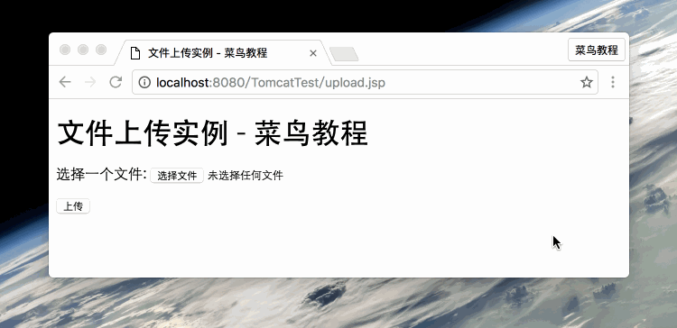
使用JSP最重要的优势之一，就是可以使用所有Java API。本章将会详细地讲述Java中的Date类，它在java.util包下，封装了当前日期和时间。
Date类有两个构造函数。第一个构造函数使用当前日期和时间来初始化对象。
Date( )
第二个构造函数接受一个参数，这个参数表示从1970年1月1日凌晨至所要表示时间的毫秒数。
Date(long millisec)
获取Date对象后，您就能够使用下表列出的所有方法：
| 序号 | 方法 & 描述 |
|---|---|
| 1 | boolean after(Date date) 如果比给定的日期晚，则返回true，否则返回false |
| 2 | boolean before(Date date) 如果比给定的日期早，则返回true，否则返回false |
| 3 | Object clone( ) 获取当前对象的一个副本 |
| 4 | int compareTo(Date date) 如果与给定日期相等，则返回0，如果比给定日期早，则返回一个负数，如果比给定日期晚，则返回一个正数 |
| 5 | int compareTo(Object obj) 与 compareTo(Date) 方法相同，如果 obj 不是Date类或其子类的对象，抛出ClassCastException异常 |
| 6 | boolean equals(Object date) 如果与给定日期相同，则返回true，否则返回false |
| 7 | long getTime( ) 返回从1970年1月1日凌晨至此对象所表示时间的毫秒数 |
| 8 | int hashCode( ) 返回此对象的哈希码 |
| 9 | void setTime(long time) 使用给定参数设置时间和日期，参数time表示从1970年1月1日凌晨至time所经过的毫秒数 |
| 10 | String toString( ) 将此对象转换为字符串并返回这个字符串 |
使用JSP编程可以很容易的获取当前日期和时间，只要使用Date对象的toString()方法就行了，就像下面这样：
<%@ page language="java" contentType="text/html; charset=UTF-8"
pageEncoding="UTF-8"%>
<%@ page import="java.io.*,java.util.*, javax.servlet.*" %>
<html>
<head>
<title>显示当前时间与日期</title>
</head>
<body>
<h1>显示当前时间与日期</h1>
<%
Date date = new Date();
out.print( "<h2 align=\"center\">" +date.toString()+"</h2>");
%>
</body>
</html>
将上面的代码保存在 main.jsp 文件中，然后访问 http://localhost:8080/testjsp/main.jsp，运行结果如下：
显示当前时间与日期 Sat Jun 25 17:54:34 CST 2016
刷新 http://localhost:8080/testjsp/main.jsp，就可以发现每次刷新所得到的秒数都不相同。
就像我在开头所提到的，您可以在JSP脚本中使用任何Java方法。如果您想要比较两个日期，
可以参照下面的方法来做：
SimpleDateFormat使用一种地区敏感的方式来格式化和解析日期，它允许您使用自定义的模式来格式化日期和时间。
对CurrentDate.jsp稍作修改，得到如下修改后的代码：
<%@ page language="java" contentType="text/html; charset=UTF-8"
pageEncoding="UTF-8"%>
<%@ page import="java.io.*,java.util.*" %>
<%@ page import="javax.servlet.*,java.text.*" %>
<html>
<head>
<title>显示当前时间与日期</title>
</head>
<body>
<h1>显示当前时间与日期</h1>
<%
Date dNow = new Date( );
SimpleDateFormat ft =
new SimpleDateFormat ("yyyy-MM-dd HH:mm:ss");
out.print( "<h2 align=\"center\">" + ft.format(dNow) + "</h2>");
%>
</body>
</html>
再次编译 main.jsp，然后访问 http://localhost:8080/testjsp/main.jsp，就可以得到如下结果：
显示当前时间与日期 2016-06-25 17:57:53
要指定模式字符串，需要使用下表列出的格式码：
| 字符 | 描述 | 示例 |
|---|---|---|
| G | 时代标识符 | AD |
| y | 4位数年份 | 2001 |
| M | 月 | July or 07 |
| d | 日 | 10 |
| h | 12小时制， A.M./P.M. (1~12) | 12 |
| H | 24小时制 | 22 |
| m | 分钟 | 30 |
| s | 秒 | 55 |
| S | 毫秒 | 234 |
| E | 星期 | Tuesday |
| D | 一年中的某天 | 360 |
| F | 一个月中某星期的某天 | 2 (second Wed. in July) |
| w | 一年中的某星期 | 40 |
| W | 一个月中的某星期 | 1 |
| a | A.M./P.M. 标记 | PM |
| k | 一天中的某个小时 (1~24) | 24 |
| K | 一天中的某个小时，A.M./P.M. (0~11) | 10 |
| z | 时区 | Eastern Standard Time |
| ' | 文本分隔 | Delimiter |
| " | 单引号 | ` |
更多关于Date类的详细信息请查阅Java API文档。
当需要将文档移动到一个新的位置时，就需要使用JSP重定向了。
最简单的重定向方式就是使用response对象的sendRedirect()方法。这个方法的签名如下：
public void response.sendRedirect(String location) throws IOException
这个方法将状态码和新的页面位置作为响应发回给浏览器。您也可以使用setStatus()和setHeader()方法来得到同样的效果：
....
String site = "http://www.runoob.com" ;
response.setStatus(response.SC_MOVED_TEMPORARILY);
response.setHeader("Location", site);
....
这个例子表明了JSP如何进行页面重定向：
<%@ page language="java" contentType="text/html; charset=UTF-8"
pageEncoding="UTF-8"%>
<%@ page import="java.io.*,java.util.*" %>
<html>
<html>
<head>
<title>页面重定向</title>
</head>
<body>
<h1>页面重定向</h1>
<%
// 重定向到新地址
String site = new String("http://www.runoob.com");
response.setStatus(response.SC_MOVED_TEMPORARILY);
response.setHeader("Location", site);
%>
</body>
</html>
将以上代码保存在PageRedirecting.jsp文件中，然后访问http://localhost:8080/PageRedirect.jsp，它将会把您带至http://www.runoob.com/。
有时候我们需要知道某个页面被访问的次数，这时我们就需要在页面上添加页面统计器，页面访问的统计一般在用户第一次载入时累加该页面的访问数上。
要实现一个计数器，您可以利用应用程序隐式对象和相关方法getAttribute()和setAttribute()来实现。
这个对象表示JSP页面的整个生命周期中。当JSP页面初始化时创建此对象，当JSP页面调用jspDestroy()时删除该对象。
以下是在应用中创建变量的语法：
application.setAttribute(String Key, Object Value);
您可以使用上述方法来设置一个计数器变量及更新该变量的值。读取该变量的方法如下：
application.getAttribute(String Key);
在页面每次被访问时，你可以读取计数器的当前值，并递增1，然后重新设置，在下一个用户访问时就将新的值显示在页面上。
该实例将介绍如何使用JSP来计算特定页面访问的总人数。如果你要计算你网站使用页面的总点击量，那么你就必须将该代码放在所有的JSP页面上。
<%@ page language="java" contentType="text/html; charset=UTF-8"
pageEncoding="UTF-8"%>
<%@ page import="java.io.*,java.util.*" %>
<html>
<html>
<head>
<title>访问量统计</title>
</head>
<body>
<%
Integer hitsCount =
(Integer)application.getAttribute("hitCounter");
if( hitsCount ==null || hitsCount == 0 ){
/* 第一次访问 */
out.println("欢迎访问菜鸟教程!");
hitsCount = 1;
}else{
/* 返回访问值 */
out.println("欢迎再次访问菜鸟教程!");
hitsCount += 1;
}
application.setAttribute("hitCounter", hitsCount);
%>
<p>页面访问量为: <%= hitsCount%></p>
</body>
</html>
现在我们将上面的代码放置于main.jsp文件上，并访问http://localhost:8080/testjsp/main.jsp文件。你会看到页面会生成个计数器，在我们每次刷新页面时，计数器都会发生变化（每次刷新增加1）。
你也可以通过不同的浏览器访问，计数器会在每次访问后增加1。如下所示：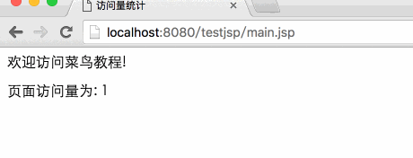
使用以上方法，在 web 服务器重启后，计数器会被复位为 0，即前面保留的数据都会消失，你可以使用以下几种方式解决该问题:
想象一下，如果要直播比赛的比分，或股票市场的实时状态，或当前的外汇配给，该怎么实现呢？显然，要实现这种实时功能，您就不得不规律性地刷新页面。
JSP提供了一种机制来使这种工作变得简单，它能够定时地自动刷新页面。
刷新一个页面最简单的方式就是使用response对象的setIntHeader()方法。这个方法的签名如下：
public void setIntHeader(String header, int headerValue)
这个方法通知浏览器在给定的时间后刷新，时间以秒为单位。
这个例子使用了setIntHeader()方法来设置刷新头，模拟一个数字时钟：
<%@ page language="java" contentType="text/html; charset=UTF-8"
pageEncoding="UTF-8"%>
<%@ page import="java.io.*,java.util.*" %>
<html>
<head>
<title>自动刷新实例</title>
</head>
<body>
<h2>自动刷新实</h2>
<%
// 设置每隔5秒刷新一次
response.setIntHeader("Refresh", 5);
// 获取当前时间
Calendar calendar = new GregorianCalendar();
String am_pm;
int hour = calendar.get(Calendar.HOUR);
int minute = calendar.get(Calendar.MINUTE);
int second = calendar.get(Calendar.SECOND);
if(calendar.get(Calendar.AM_PM) == 0)
am_pm = "AM";
else
am_pm = "PM";
String CT = hour+":"+ minute +":"+ second +" "+ am_pm;
out.println("当前时间为: " + CT + "\n");
%>
</body>
</html>
把以上代码保存在main.jsp文件中，访问它。它会每隔5秒钟刷新一次页面并获取系统当前时间。运行结果如下：
自动刷新实 当前时间为: 6:5:36 PM
您也可以自己动手写个更复杂点的程序。
虽然使用JSP实现邮件发送功能很简单，但是需要有JavaMail API，并且需要安装JavaBean Activation Framework。
你也可以使用本站提供的下载链接：
下载并解压这些文件，在根目录下，您将会看到一系列jar包。将mail.jar包和activation.jar包加入CLASSPATH变量中。
这个例子展示了如何从您的机器发送一封简单的邮件。它假定localhost已经连接至网络并且有能力发送一封邮件。与此同时，请再一次确认mail.jar包和activation.jar包已经添加进CLASSPATH变量中。
<%@ page import="java.io.*,java.util.*,javax.mail.*"%>
<%@ page import="javax.mail.internet.*,javax.activation.*"%>
<%@ page import="javax.servlet.http.*,javax.servlet.*" %>
<%
String result;
// 收件人的电子邮件
String to = "abcd@gmail.com";
// 发件人的电子邮件
String from = "mcmohd@gmail.com";
// 假设你是从本地主机发送电子邮件
String host = "localhost";
// 获取系统属性对象
Properties properties = System.getProperties();
// 设置邮件服务器
properties.setProperty("mail.smtp.host", host);
// 获取默认的Session对象。
Session mailSession = Session.getDefaultInstance(properties);
try{
// 创建一个默认的MimeMessage对象。
MimeMessage message = new MimeMessage(mailSession);
// 设置 From: 头部的header字段
message.setFrom(new InternetAddress(from));
// 设置 To: 头部的header字段
message.addRecipient(Message.RecipientType.TO,
new InternetAddress(to));
// 设置 Subject: header字段
message.setSubject("This is the Subject Line!");
// 现在设置的实际消息
message.setText("This is actual message");
// 发送消息
Transport.send(message);
result = "Sent message successfully....";
}catch (MessagingException mex) {
mex.printStackTrace();
result = "Error: unable to send message....";
}
%>
<html>
<head>
<title>Send Email using JSP</title>
</head>
<body>
<center>
<h1>Send Email using JSP</h1>
</center>
<p align="center">
<%
out.println("Result: " + result + "\n");
%>
</p>
</body>
</html>
现在访问http://localhost:8080/SendEmail.jsp，它将会发送一封邮件给abcd@gmail.com 并显示如下结果：
Send Email using JSP Result: Sent message successfully....
如果想要把邮件发送给多人，下面列出的方法可以用来指明多个邮箱地址：
void addRecipients(Message.RecipientType type,
Address[] addresses)
throws MessagingException
参数的描述如下：
这个例子发送一封简单的HTML邮件。它假定您的localhost已经连接至网络并且有能力发送邮件。与此同时，请再一次确认mail.jar包和activation.jar包已经添加进CLASSPATH变量中。
这个例子和前一个例子非常相似，不过在这个例子中我们使用了setContent()方法，将"text/html"做为第二个参数传给它，用来表明消息中包含了HTML内容。
<%@ page import="java.io.*,java.util.*,javax.mail.*"%>
<%@ page import="javax.mail.internet.*,javax.activation.*"%>
<%@ page import="javax.servlet.http.*,javax.servlet.*" %>
<%
String result;
// 收件人的电子邮件
String to = "abcd@gmail.com";
// 发件人的电子邮件
String from = "mcmohd@gmail.com";
// 假设你是从本地主机发送电子邮件
String host = "localhost";
// 获取系统属性对象
Properties properties = System.getProperties();
// 设置邮件服务器
properties.setProperty("mail.smtp.host", host);
// 获取默认的Session对象。
Session mailSession = Session.getDefaultInstance(properties);
try{
// 创建一个默认的MimeMessage对象。
MimeMessage message = new MimeMessage(mailSession);
// 设置 From: 头部的header字段
message.setFrom(new InternetAddress(from));
// 设置 To: 头部的header字段
message.addRecipient(Message.RecipientType.TO,
new InternetAddress(to));
// 设置 Subject: header字段
message.setSubject("This is the Subject Line!");
// 设置 HTML消息
message.setContent("<h1>This is actual message</h1>",
"text/html" );
// 发送消息
Transport.send(message);
result = "Sent message successfully....";
}catch (MessagingException mex) {
mex.printStackTrace();
result = "Error: unable to send message....";
}
%>
<html>
<head>
<title>Send HTML Email using JSP</title>
</head>
<body>
<center>
<h1>Send Email using JSP</h1>
</center>
<p align="center">
<%
out.println("Result: " + result + "\n");
%>
</p>
</body>
</html>
现在你可以尝试使用以上JSP文件来发送HTML消息的电子邮件。
这个例子告诉我们如何发送一封包含附件的邮件。
<%@ page import="java.io.*,java.util.*,javax.mail.*"%>
<%@ page import="javax.mail.internet.*,javax.activation.*"%>
<%@ page import="javax.servlet.http.*,javax.servlet.*" %>
<%
String result;
// 收件人的电子邮件
String to = "abcd@gmail.com";
// 发件人的电子邮件
String from = "mcmohd@gmail.com";
// 假设你是从本地主机发送电子邮件
String host = "localhost";
// 获取系统属性对象
Properties properties = System.getProperties();
// 设置邮件服务器
properties.setProperty("mail.smtp.host", host);
// 获取默认的Session对象。
Session mailSession = Session.getDefaultInstance(properties);
try{
// 创建一个默认的MimeMessage对象。
MimeMessage message = new MimeMessage(mailSession);
// 设置 From: 头部的header字段
message.setFrom(new InternetAddress(from));
// 设置 To: 头部的header字段
message.addRecipient(Message.RecipientType.TO,
new InternetAddress(to));
// 设置 Subject: header字段
message.setSubject("This is the Subject Line!");
// 创建消息部分
BodyPart messageBodyPart = new MimeBodyPart();
// 填充消息
messageBodyPart.setText("This is message body");
// 创建多媒体消息
Multipart multipart = new MimeMultipart();
// 设置文本消息部分
multipart.addBodyPart(messageBodyPart);
// 附件部分
messageBodyPart = new MimeBodyPart();
String filename = "file.txt";
DataSource source = new FileDataSource(filename);
messageBodyPart.setDataHandler(new DataHandler(source));
messageBodyPart.setFileName(filename);
multipart.addBodyPart(messageBodyPart);
// 发送完整消息
message.setContent(multipart );
// 发送消息
Transport.send(message);
String title = "Send Email";
result = "Sent message successfully....";
}catch (MessagingException mex) {
mex.printStackTrace();
result = "Error: unable to send message....";
}
%>
<html>
<head>
<title>Send Attachement Email using JSP</title>
</head>
<body>
<center>
<h1>Send Attachement Email using JSP</h1>
</center>
<p align="center">
<%
out.println("Result: " + result + "\n");
%>
</p>
</body>
</html>
如果邮件服务器需要用户名和密码来进行用户认证的话，可以像下面这样来设置：
properties.setProperty("mail.user", "myuser");
properties.setProperty("mail.password", "mypwd");
使用HTML表单接收一封邮件，并通过request对象获取所有邮件信息：
String to = request.getParameter("to");
String from = request.getParameter("from");
String subject = request.getParameter("subject");
String messageText = request.getParameter("body");
获取以上信息后，您就可以使用前面提到的例子来发送邮件了。
JSP标准标签库（JSTL）是一个JSP标签集合，它封装了JSP应用的通用核心功能。
JSTL支持通用的、结构化的任务，比如迭代，条件判断，XML文档操作，国际化标签，SQL标签。 除了这些，它还提供了一个框架来使用集成JSTL的自定义标签。
根据JSTL标签所提供的功能，可以将其分为5个类别。
Apache Tomcat安装JSTL 库步骤如下：
从Apache的标准标签库中下载的二进包(jakarta-taglibs-standard-current.zip)。
下载 jakarta-taglibs-standard-1.1.2.zip 包并解压，将 jakarta-taglibs-standard-1.1.2/lib/ 下的两个 jar 文件：standard.jar 和 jstl.jar 文件拷贝到 /WEB-INF/lib/ 下。
将 tld 下的需要引入的 tld 文件复制到 WEB-INF 目录下。
接下来我们在 web.xml 文件中添加以下配置：
<?xml version="1.0" encoding="UTF-8"?>
<web-app version="2.4"
xmlns="http://java.sun.com/xml/ns/j2ee"
xmlns:xsi="http://www.w3.org/2001/XMLSchema-instance"
xsi:schemaLocation="http://java.sun.com/xml/ns/j2ee
http://java.sun.com/xml/ns/j2ee/web-app_2_4.xsd">
<jsp-config>
<taglib>
<taglib-uri>http://java.sun.com/jsp/jstl/fmt</taglib-uri>
<taglib-location>/WEB-INF/fmt.tld</taglib-location>
</taglib>
<taglib>
<taglib-uri>http://java.sun.com/jsp/jstl/fmt-rt</taglib-uri>
<taglib-location>/WEB-INF/fmt-rt.tld</taglib-location>
</taglib>
<taglib>
<taglib-uri>http://java.sun.com/jsp/jstl/core</taglib-uri>
<taglib-location>/WEB-INF/c.tld</taglib-location>
</taglib>
<taglib>
<taglib-uri>http://java.sun.com/jsp/jstl/core-rt</taglib-uri>
<taglib-location>/WEB-INF/c-rt.tld</taglib-location>
</taglib>
<taglib>
<taglib-uri>http://java.sun.com/jsp/jstl/sql</taglib-uri>
<taglib-location>/WEB-INF/sql.tld</taglib-location>
</taglib>
<taglib>
<taglib-uri>http://java.sun.com/jsp/jstl/sql-rt</taglib-uri>
<taglib-location>/WEB-INF/sql-rt.tld</taglib-location>
</taglib>
<taglib>
<taglib-uri>http://java.sun.com/jsp/jstl/x</taglib-uri>
<taglib-location>/WEB-INF/x.tld</taglib-location>
</taglib>
<taglib>
<taglib-uri>http://java.sun.com/jsp/jstl/x-rt</taglib-uri>
<taglib-location>/WEB-INF/x-rt.tld</taglib-location>
</taglib>
</jsp-config>
</web-app>
使用任何库，你必须在每个 JSP 文件中的头部包含 <taglib> 标签。
核心标签是最常用的 JSTL标签。引用核心标签库的语法如下：
<%@ taglib prefix="c" uri="http://java.sun.com/jsp/jstl/core" %>
| 标签 | 描述 |
|---|---|
| <c:out> | 用于在JSP中显示数据，就像<%= ... > |
| <c:set> | 用于保存数据 |
| <c:remove> | 用于删除数据 |
| <c:catch> | 用来处理产生错误的异常状况，并且将错误信息储存起来 |
| <c:if> | 与我们在一般程序中用的if一样 |
| <c:choose> | 本身只当做<c:when>和<c:otherwise>的父标签 |
| <c:when> | <c:choose>的子标签，用来判断条件是否成立 |
| <c:otherwise> | <c:choose>的子标签，接在<c:when>标签后，当<c:when>标签判断为false时被执行 |
| <c:import> | 检索一个绝对或相对 URL，然后将其内容暴露给页面 |
| <c:forEach> | 基础迭代标签，接受多种集合类型 |
| <c:forTokens> | 根据指定的分隔符来分隔内容并迭代输出 |
| <c:param> | 用来给包含或重定向的页面传递参数 |
| <c:redirect> | 重定向至一个新的URL. |
| <c:url> | 使用可选的查询参数来创造一个URL |
JSTL格式化标签用来格式化并输出文本、日期、时间、数字。引用格式化标签库的语法如下：
<%@ taglib prefix="fmt"
uri="http://java.sun.com/jsp/jstl/fmt" %>
| 标签 | 描述 |
|---|---|
| <fmt:formatNumber> | 使用指定的格式或精度格式化数字 |
| <fmt:parseNumber> | 解析一个代表着数字，货币或百分比的字符串 |
| <fmt:formatDate> | 使用指定的风格或模式格式化日期和时间 |
| <fmt:parseDate> | 解析一个代表着日期或时间的字符串 |
| <fmt:bundle> | 绑定资源 |
| <fmt:setLocale> | 指定地区 |
| <fmt:setBundle> | 绑定资源 |
| <fmt:timeZone> | 指定时区 |
| <fmt:setTimeZone> | 指定时区 |
| <fmt:message> | 显示资源配置文件信息 |
| <fmt:requestEncoding> | 设置request的字符编码 |
JSTL SQL标签库提供了与关系型数据库（Oracle，MySQL，SQL Server等等）进行交互的标签。引用SQL标签库的语法如下：
<%@ taglib prefix="sql"
uri="http://java.sun.com/jsp/jstl/sql" %>
| 标签 | 描述 |
|---|---|
| <sql:setDataSource> | 指定数据源 |
| <sql:query> | 运行SQL查询语句 |
| <sql:update> | 运行SQL更新语句 |
| <sql:param> | 将SQL语句中的参数设为指定值 |
| <sql:dateParam> | 将SQL语句中的日期参数设为指定的java.util.Date 对象值 |
| <sql:transaction> | 在共享数据库连接中提供嵌套的数据库行为元素，将所有语句以一个事务的形式来运行 |
JSTL XML标签库提供了创建和操作XML文档的标签。引用XML标签库的语法如下：
<%@ taglib prefix="x"
uri="http://java.sun.com/jsp/jstl/xml" %>
在使用xml标签前，你必须将XML 和 XPath 的相关包拷贝至你的<Tomcat 安装目录>\lib下:
| 标签 | 描述 |
|---|---|
| <x:out> | 与<%= ... >,类似，不过只用于XPath表达式 |
| <x:parse> | 解析 XML 数据 |
| <x:set> | 设置XPath表达式 |
| <x:if> | 判断XPath表达式，若为真，则执行本体中的内容，否则跳过本体 |
| <x:forEach> | 迭代XML文档中的节点 |
| <x:choose> | <x:when>和<x:otherwise>的父标签 |
| <x:when> | <x:choose>的子标签，用来进行条件判断 |
| <x:otherwise> | <x:choose>的子标签，当<x:when>判断为false时被执行 |
| <x:transform> | 将XSL转换应用在XML文档中 |
| <x:param> | 与<x:transform>共同使用，用于设置XSL样式表 |
JSTL包含一系列标准函数，大部分是通用的字符串处理函数。引用JSTL函数库的语法如下：
<%@ taglib prefix="fn"
uri="http://java.sun.com/jsp/jstl/functions" %>
| 函数 | 描述 |
|---|---|
| fn:contains() | 测试输入的字符串是否包含指定的子串 |
| fn:containsIgnoreCase() | 测试输入的字符串是否包含指定的子串，大小写不敏感 |
| fn:endsWith() | 测试输入的字符串是否以指定的后缀结尾 |
| fn:escapeXml() | 跳过可以作为XML标记的字符 |
| fn:indexOf() | 返回指定字符串在输入字符串中出现的位置 |
| fn:join() | 将数组中的元素合成一个字符串然后输出 |
| fn:length() | 返回字符串长度 |
| fn:replace() | 将输入字符串中指定的位置替换为指定的字符串然后返回 |
| fn:split() | 将字符串用指定的分隔符分隔然后组成一个子字符串数组并返回 |
| fn:startsWith() | 测试输入字符串是否以指定的前缀开始 |
| fn:substring() | 返回字符串的子集 |
| fn:substringAfter() | 返回字符串在指定子串之后的子集 |
| fn:substringBefore() | 返回字符串在指定子串之前的子集 |
| fn:toLowerCase() | 将字符串中的字符转为小写 |
| fn:toUpperCase() | 将字符串中的字符转为大写 |
| fn:trim() | 移除首尾的空白符 |
本教程假定您已经了解了 JDBC 应用程序的工作方式。在您开始学习 JSP 数据库访问之前，请访问 Java MySQL 连接 来设置相关驱动及配置。
注意：
你可以下载本站提供的 jar 包：
MySQL 5 版本：mysql-connector-java-5.1.39-bin.jar
MySQL 8 版本：mysql-connector-java-8.0.19.jar
下载后把 mysql-connector-java-<对应版本>-bin.jar 拷贝到 tomcat 下 lib 目录。
MySQL 8.0 以上版本的数据库连接有所不同：
1、com.mysql.jdbc.Driver 更换为 com.mysql.cj.jdbc.Driver。
MySQL 8.0 以上版本不需要建立 SSL 连接的，需要显示关闭。
最后还需要设置 CST。
加载驱动与连接数据库方式如下：
<sql:setDataSource var="snapshot" driver="com.mysql.cj.jdbc.Driver" url="jdbc:mysql://localhost:3306/RUNOOB?useSSL=false&serverTimezone=UTC&useUnicode=true&characterEncoding=utf-8 user="root" password="12345"/>
从基本概念下手，让我们来创建一个简单的表，并在表中创建几条记录。
接下来我们在 MySQL 中创建 RUNOOB 数据库，并创建 websites 数据表，表结构如下：
CREATE TABLE `websites` ( `id` int(11) NOT NULL AUTO_INCREMENT, `name` char(20) NOT NULL DEFAULT '' COMMENT '站点名称', `url` varchar(255) NOT NULL DEFAULT '', `alexa` int(11) NOT NULL DEFAULT '0' COMMENT 'Alexa 排名', `country` char(10) NOT NULL DEFAULT '' COMMENT '国家', PRIMARY KEY (`id`) ) ENGINE=InnoDB AUTO_INCREMENT=10 DEFAULT CHARSET=utf8;
插入一些数据：
INSERT INTO `websites` VALUES ('1', 'Google', 'https://www.google.cm/', '1', 'USA'), ('2', '淘宝', 'https://www.taobao.com/', '13', 'CN'), ('3', '菜鸟教程', 'http://www.runoob.com', '5892', ''), ('4', '微博', 'http://weibo.com/', '20', 'CN'), ('5', 'Facebook', 'https://www.facebook.com/', '3', 'USA');
数据表显示如下：
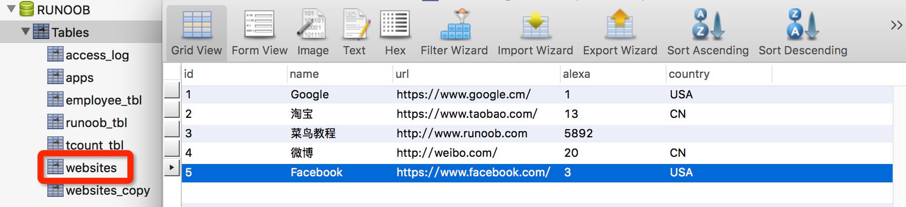
接下来的这个例子告诉我们如何使用JSTL SQL标签来运行SQL SELECT语句：
<%@ page language="java" contentType="text/html; charset=UTF-8"
pageEncoding="UTF-8"%>
<%@ page import="java.io.*,java.util.*,java.sql.*"%>
<%@ page import="javax.servlet.http.*,javax.servlet.*" %>
<%@ taglib uri="http://java.sun.com/jsp/jstl/core" prefix="c"%>
<%@ taglib uri="http://java.sun.com/jsp/jstl/sql" prefix="sql"%>
<html>
<head>
<title>SELECT 操作</title>
</head>
<body>
<!--
JDBC 驱动名及数据库 URL
数据库的用户名与密码，需要根据自己的设置
useUnicode=true&characterEncoding=utf-8 防止中文乱码
-->
<sql:setDataSource var="snapshot" driver="com.mysql.jdbc.Driver"
url="jdbc:mysql://localhost:3306/RUNOOB?useUnicode=true&characterEncoding=utf-8"
user="root" password="123456"/>
<sql:query dataSource="${snapshot}" var="result">
SELECT * from websites;
</sql:query>
<h1>JSP 数据库实例 - 菜鸟教程</h1>
<table border="1" width="100%">
<tr>
<th>ID</th>
<th>站点名</th>
<th>站点地址</th>
</tr>
<c:forEach var="row" items="${result.rows}">
<tr>
<td><c:out value="${row.id}"/></td>
<td><c:out value="${row.name}"/></td>
<td><c:out value="${row.url}"/></td>
</tr>
</c:forEach>
</table>
</body>
</html>
访问这个JSP例子，运行结果如下：
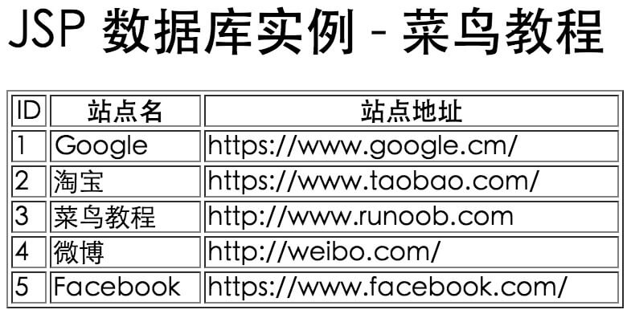
这个例子告诉我们如何使用JSTL SQL标签来运行SQL INSERT语句：
<%@ page language="java" contentType="text/html; charset=UTF-8"
pageEncoding="UTF-8"%>
<%@ page import="java.io.*,java.util.*,java.sql.*"%>
<%@ page import="javax.servlet.http.*,javax.servlet.*" %>
<%@ taglib uri="http://java.sun.com/jsp/jstl/core" prefix="c"%>
<%@ taglib uri="http://java.sun.com/jsp/jstl/sql" prefix="sql"%>
<html>
<head>
<title>SELECT 操作</title>
</head>
<body>
<!--
JDBC 驱动名及数据库 URL
数据库的用户名与密码，需要根据自己的设置
useUnicode=true&characterEncoding=utf-8 防止中文乱码
-->
<sql:setDataSource var="snapshot" driver="com.mysql.jdbc.Driver"
url="jdbc:mysql://localhost:3306/RUNOOB?useUnicode=true&characterEncoding=utf-8"
user="root" password="123456"/>
<!--
插入数据
-->
<sql:update dataSource="${snapshot}" var="result">
INSERT INTO websites (name,url,alexa,country) VALUES ('菜鸟教程移动站', 'http://m.runoob.com', 5093, 'CN');
</sql:update>
<sql:query dataSource="${snapshot}" var="result">
SELECT * from websites;
</sql:query>
<h1>JSP 数据库实例 - 菜鸟教程</h1>
<table border="1" width="100%">
<tr>
<th>ID</th>
<th>站点名</th>
<th>站点地址</th>
</tr>
<c:forEach var="row" items="${result.rows}">
<tr>
<td><c:out value="${row.id}"/></td>
<td><c:out value="${row.name}"/></td>
<td><c:out value="${row.url}"/></td>
</tr>
</c:forEach>
</table>
</body>
</html>
访问这个JSP例子，运行结果如下：
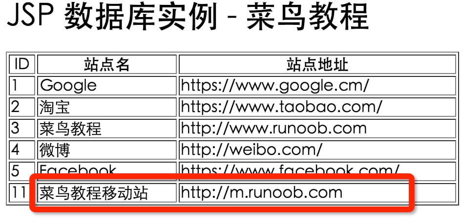
这个例子告诉我们如何使用JSTL SQL标签来运行SQL DELETE语句：
<%@ page language="java" contentType="text/html; charset=UTF-8"
pageEncoding="UTF-8"%>
<%@ page import="java.io.*,java.util.*,java.sql.*"%>
<%@ page import="javax.servlet.http.*,javax.servlet.*" %>
<%@ taglib uri="http://java.sun.com/jsp/jstl/core" prefix="c"%>
<%@ taglib uri="http://java.sun.com/jsp/jstl/sql" prefix="sql"%>
<html>
<head>
<title>SELECT 操作</title>
</head>
<body>
<!--
JDBC 驱动名及数据库 URL
数据库的用户名与密码，需要根据自己的设置
useUnicode=true&characterEncoding=utf-8 防止中文乱码
-->
<sql:setDataSource var="snapshot" driver="com.mysql.jdbc.Driver"
url="jdbc:mysql://localhost:3306/RUNOOB?useUnicode=true&characterEncoding=utf-8"
user="root" password="123456"/>
<!--
删除 ID 为 11 的数据
-->
<sql:update dataSource="${snapshot}" var="count">
DELETE FROM websites WHERE Id = ?
<sql:param value="${11}" />
</sql:update>
<sql:query dataSource="${snapshot}" var="result">
SELECT * from websites;
</sql:query>
<h1>JSP 数据库实例 - 菜鸟教程</h1>
<table border="1" width="100%">
<tr>
<th>ID</th>
<th>站点名</th>
<th>站点地址</th>
</tr>
<c:forEach var="row" items="${result.rows}">
<tr>
<td><c:out value="${row.id}"/></td>
<td><c:out value="${row.name}"/></td>
<td><c:out value="${row.url}"/></td>
</tr>
</c:forEach>
</table>
</body>
</html>
访问这个JSP例子，运行结果如下：
这个例子告诉我们如何使用JSTL SQL标签来运行SQL UPDATE语句：
<%@ page language="java" contentType="text/html; charset=UTF-8"
pageEncoding="UTF-8"%>
<%@ page import="java.io.*,java.util.*,java.sql.*"%>
<%@ page import="javax.servlet.http.*,javax.servlet.*" %>
<%@ taglib uri="http://java.sun.com/jsp/jstl/core" prefix="c"%>
<%@ taglib uri="http://java.sun.com/jsp/jstl/sql" prefix="sql"%>
<html>
<head>
<title>SELECT 操作</title>
</head>
<body>
<!--
JDBC 驱动名及数据库 URL
数据库的用户名与密码，需要根据自己的设置
useUnicode=true&characterEncoding=utf-8 防止中文乱码
-->
<sql:setDataSource var="snapshot" driver="com.mysql.jdbc.Driver"
url="jdbc:mysql://localhost:3306/RUNOOB?useUnicode=true&characterEncoding=utf-8"
user="root" password="123456"/>
<!--
修改 ID 为 3 的名字：菜鸟教程改为 RUNOOB
-->
<c:set var="SiteId" value="3"/>
<sql:update dataSource="${snapshot}" var="count">
UPDATE websites SET name = 'RUNOOB' WHERE Id = ?
<sql:param value="${SiteId}" />
</sql:update>
<sql:query dataSource="${snapshot}" var="result">
SELECT * from websites;
</sql:query>
<h1>JSP 数据库实例 - 菜鸟教程</h1>
<table border="1" width="100%">
<tr>
<th>ID</th>
<th>站点名</th>
<th>站点地址</th>
</tr>
<c:forEach var="row" items="${result.rows}">
<tr>
<td><c:out value="${row.id}"/></td>
<td><c:out value="${row.name}"/></td>
<td><c:out value="${row.url}"/></td>
</tr>
</c:forEach>
</table>
</body>
</html>
访问这个JSP例子，运行结果如下：
当通过HTTP发送XML数据时，就有必要使用JSP来处理传入和流出的XML文档了，比如RSS文档。作为一个XML文档，它仅仅只是一堆文本而已，使用JSP创建XML文档并不比创建一个HTML文档难。
使用JSP发送XML内容就和发送HTML内容一样。唯一的不同就是您需要把页面的context属性设置为text/xml。要设置context属性，使用<%@page % >命令，就像这样：
<%@ page contentType="text/xml" %>
接下来这个例子向浏览器发送XML内容：
<%@ page contentType="text/xml" %>
<books>
<book>
<name>Padam History</name>
<author>ZARA</author>
<price>100</price>
</book>
</books>
使用不同的浏览器来访问这个例子，看看这个例子所呈现的文档树。
在使用JSP处理XML之前，您需要将与XML 和XPath相关的两个库文件放在<Tomcat Installation Directory>\lib目录下：
books.xml文件:
<books> <book> <name>Padam History</name> <author>ZARA</author> <price>100</price> </book> <book> <name>Great Mistry</name> <author>NUHA</author> <price>2000</price> </book> </books>
main.jsp文件：
<%@ page language="java" contentType="text/html; charset=UTF-8"
pageEncoding="UTF-8"%>
<%@ taglib prefix="c" uri="http://java.sun.com/jsp/jstl/core" %>
<%@ taglib prefix="x" uri="http://java.sun.com/jsp/jstl/xml" %>
<html>
<head>
<title>JSTL x:parse Tags</title>
</head>
<body>
<h3>Books Info:</h3>
<c:import var="bookInfo" url="http://localhost:8080/books.xml"/>
<x:parse xml="${bookInfo}" var="output"/>
<b>The title of the first book is</b>:
<x:out select="$output/books/book[1]/name" />
<br>
<b>The price of the second book</b>:
<x:out select="$output/books/book[2]/price" />
</body>
</html>
访问http://localhost:8080/main.jsp，运行结果如下：
BOOKS INFO: The title of the first book is:Padam History The price of the second book: 2000
这个是XSLT样式表style.xsl文件：
<?xml version="1.0"?>
<xsl:stylesheet xmlns:xsl=
"http://www.w3.org/1999/XSL/Transform" version="1.0">
<xsl:output method="html" indent="yes"/>
<xsl:template match="/">
<html>
<body>
<xsl:apply-templates/>
</body>
</html>
</xsl:template>
<xsl:template match="books">
<table border="1" width="100%">
<xsl:for-each select="book">
<tr>
<td>
<i><xsl:value-of select="name"/></i>
</td>
<td>
<xsl:value-of select="author"/>
</td>
<td>
<xsl:value-of select="price"/>
</td>
</tr>
</xsl:for-each>
</table>
</xsl:template>
</xsl:stylesheet>
这个是main.jsp文件：
<%@ taglib prefix="c" uri="http://java.sun.com/jsp/jstl/core" %>
<%@ taglib prefix="x" uri="http://java.sun.com/jsp/jstl/xml" %>
<html>
<head>
<title>JSTL x:transform Tags</title>
</head>
<body>
<h3>Books Info:</h3>
<c:set var="xmltext">
<books>
<book>
<name>Padam History</name>
<author>ZARA</author>
<price>100</price>
</book>
<book>
<name>Great Mistry</name>
<author>NUHA</author>
<price>2000</price>
</book>
</books>
</c:set>
<c:import url="http://localhost:8080/style.xsl" var="xslt"/>
<x:transform xml="${xmltext}" xslt="${xslt}"/>
</body>
</html>
运行结果如下：
更多关于使用JSTL处理XML的内容请查阅JSP标准标签库。
JavaBean 是特殊的 Java 类，使用 Java 语言书写，并且遵守 JavaBean API 规范。
接下来给出的是 JavaBean 与其它 Java 类相比而言独一无二的特征：
一个 JavaBean 对象的属性应该是可访问的。这个属性可以是任意合法的 Java 数据类型，包括自定义 Java 类。
一个 JavaBean 对象的属性可以是可读写，或只读，或只写。JavaBean 对象的属性通过 JavaBean 实现类中提供的两个方法来访问：
| 方法 | 描述 |
|---|---|
| getPropertyName() | 举例来说，如果属性的名称为 myName，那么这个方法的名字就要写成 getMyName() 来读取这个属性。这个方法也称为访问器。 |
| setPropertyName() | 举例来说，如果属性的名称为 myName，那么这个方法的名字就要写成 setMyName()来写入这个属性。这个方法也称为写入器。 |
一个只读的属性只提供 getPropertyName() 方法，一个只写的属性只提供 setPropertyName() 方法。
这是 StudentBean.java 文件：
package com.runoob;
public class StudentsBean implements java.io.Serializable
{
private String firstName = null;
private String lastName = null;
private int age = 0;
public StudentsBean() {
}
public String getFirstName(){
return firstName;
}
public String getLastName(){
return lastName;
}
public int getAge(){
return age;
}
public void setFirstName(String firstName){
this.firstName = firstName;
}
public void setLastName(String lastName){
this.lastName = lastName;
}
public void setAge(int age) {
this.age = age;
}
}
编译 StudentBean.java 文件(最后一个实例会用到):
$ javac StudentsBean.java
编译后获得 StudentBean.class 文件，将其拷贝到 <JSP 项目>/WebContent/WEB-INF/classes/com/runoob，如下图所示:
<jsp:useBean> 标签可以在 JSP 中声明一个 JavaBean，然后使用。声明后，JavaBean 对象就成了脚本变量，可以通过脚本元素或其他自定义标签来访问。<jsp:useBean> 标签的语法格式如下：
<jsp:useBean id="bean 的名字" scope="bean 的作用域" typeSpec/>
其中，根据具体情况，scope 的值可以是 page，request，session 或 application。id值可任意只要不和同一 JSP 文件中其它 <jsp:useBean> 中 id 值一样就行了。
接下来给出的是 <jsp:useBean> 标签的一个简单的用法：
<%@ page language="java" contentType="text/html; charset=UTF-8"
pageEncoding="UTF-8"%>
<html>
<head>
<title>useBean 实例</title>
</head>
<body>
<jsp:useBean id="date" class="java.util.Date" />
<p>日期为：<%= date %>
</body>
</html>
它将会产生如下结果：
日期为：Tue Jun 28 15:22:24 CST 2016
在 <jsp:useBean> 标签主体中使用 <jsp:getProperty/> 标签来调用 getter 方法，使用 <jsp:setProperty/> 标签来调用 setter 方法，语法格式如下：
<jsp:useBean id="id" class="bean 编译的类" scope="bean 作用域">
<jsp:setProperty name="bean 的 id" property="属性名"
value="value"/>
<jsp:getProperty name="bean 的 id" property="属性名"/>
...........
</jsp:useBean>
name属性指的是Bean的id属性。property属性指的是想要调用的getter或setter方法。
接下来给出使用以上语法进行属性访问的一个简单例子：
<%@ page language="java" contentType="text/html; charset=UTF-8"
pageEncoding="UTF-8"%>
<html>
<head>
<title>get 和 set 属性实例</title>
</head>
<body>
<jsp:useBean id="students"
class="com.runoob.StudentsBean">
<jsp:setProperty name="students" property="firstName"
value="小强"/>
<jsp:setProperty name="students" property="lastName"
value="王"/>
<jsp:setProperty name="students" property="age"
value="10"/>
</jsp:useBean>
<p>学生名字:
<jsp:getProperty name="students" property="firstName"/>
</p>
<p>学生姓氏:
<jsp:getProperty name="students" property="lastName"/>
</p>
<p>学生年龄:
<jsp:getProperty name="students" property="age"/>
</p>
</body>
</html>
访问以上 JSP，运行结果如下：
学生名字: 小强 学生姓氏: 王 学生年龄: 10
自定义标签是用户定义的JSP语言元素。当JSP页面包含一个自定义标签时将被转化为servlet，标签转化为对被 称为tag handler的对象的操作，即当servlet执行时Web container调用那些操作。
JSP标签扩展可以让你创建新的标签并且可以直接插入到一个JSP页面。 JSP 2.0规范中引入Simple Tag Handlers来编写这些自定义标记。
你可以继承SimpleTagSupport类并重写的doTag()方法来开发一个最简单的自定义标签。
接下来，我们想创建一个自定义标签叫作<ex:Hello>，标签格式为：
<ex:Hello />
要创建自定义的JSP标签，你首先必须创建处理标签的Java类。所以，让我们创建一个HelloTag类，如下所示：
package com.runoob;
import javax.servlet.jsp.tagext.*;
import javax.servlet.jsp.*;
import java.io.*;
public class HelloTag extends SimpleTagSupport {
public void doTag() throws JspException, IOException {
JspWriter out = getJspContext().getOut();
out.println("Hello Custom Tag!");
}
}
以下代码重写了doTag()方法，方法中使用了getJspContext()方法来获取当前的JspContext对象，并将"Hello Custom Tag!"传递给JspWriter对象。
编译以上类，并将其复制到环境变量CLASSPATH目录中。最后创建如下标签库：<Tomcat安装目录>webapps\ROOT\WEB-INF\custom.tld。
<taglib>
<tlib-version>1.0</tlib-version>
<jsp-version>2.0</jsp-version>
<short-name>Example TLD</short-name>
<tag>
<name>Hello</name>
<tag-class>com.runoob.HelloTag</tag-class>
<body-content>empty</body-content>
</tag>
</taglib>
接下来，我们就可以在JSP文件中使用Hello标签：
<%@ taglib prefix="ex" uri="WEB-INF/custom.tld"%>
<html>
<head>
<title>A sample custom tag</title>
</head>
<body>
<ex:Hello/>
</body>
</html>
以上程序输出结果为：
Hello Custom Tag!
你可以像标准标签库一样在标签中包含消息内容。如我们要在我们自定义的Hello中包含内容，格式如下：
<ex:Hello> This is message body </ex:Hello>
我们可以修改标签处理类文件，代码如下：
package com.runoob;
import javax.servlet.jsp.tagext.*;
import javax.servlet.jsp.*;
import java.io.*;
public class HelloTag extends SimpleTagSupport {
StringWriter sw = new StringWriter();
public void doTag()
throws JspException, IOException
{
getJspBody().invoke(sw);
getJspContext().getOut().println(sw.toString());
}
}
接下来我们需要修改TLD文件，如下所示：
<taglib>
<tlib-version>1.0</tlib-version>
<jsp-version>2.0</jsp-version>
<short-name>Example TLD with Body</short-name>
<tag>
<name>Hello</name>
<tag-class>com.runoob.HelloTag</tag-class>
<body-content>scriptless</body-content>
</tag>
</taglib>
现在我们可以在JSP使用修改后的标签，如下所示:
<%@ taglib prefix="ex" uri="WEB-INF/custom.tld"%>
<html>
<head>
<title>A sample custom tag</title>
</head>
<body>
<ex:Hello>
This is message body
</ex:Hello>
</body>
</html>
以上程序输出结果如下所示：
This is message body
你可以在自定义标准中设置各种属性，要接收属性，值自定义标签类必须实现setter方法， JavaBean 中的setter方法如下所示：
package com.runoob;
import javax.servlet.jsp.tagext.*;
import javax.servlet.jsp.*;
import java.io.*;
public class HelloTag extends SimpleTagSupport {
private String message;
public void setMessage(String msg) {
this.message = msg;
}
StringWriter sw = new StringWriter();
public void doTag()
throws JspException, IOException
{
if (message != null) {
/* 从属性中使用消息 */
JspWriter out = getJspContext().getOut();
out.println( message );
}
else {
/* 从内容体中使用消息 */
getJspBody().invoke(sw);
getJspContext().getOut().println(sw.toString());
}
}
}
属性的名称是"message"，所以setter方法是的setMessage()。现在让我们在TLD文件中使用的<attribute>元素添加此属性：
<taglib>
<tlib-version>1.0</tlib-version>
<jsp-version>2.0</jsp-version>
<short-name>Example TLD with Body</short-name>
<tag>
<name>Hello</name>
<tag-class>com.runoob.HelloTag</tag-class>
<body-content>scriptless</body-content>
<attribute>
<name>message</name>
</attribute>
</tag>
</taglib>
现在我们就可以在JSP文件中使用message属性了，如下所示：
<%@ taglib prefix="ex" uri="WEB-INF/custom.tld"%>
<html>
<head>
<title>A sample custom tag</title>
</head>
<body>
<ex:Hello message="This is custom tag" />
</body>
</html>
以上实例数据输出结果为：
This is custom tag
你还可以包含以下属性：
| 属性 | 描述 |
|---|---|
| name | 定义属性的名称。每个标签的是属性名称必须是唯一的。 |
| required | 指定属性是否是必须的或者可选的,如果设置为false为可选。 |
| rtexprvalue | 声明在运行表达式时，标签属性是否有效。 |
| type | 定义该属性的Java类类型 。默认指定为 String |
| description | 描述信息 |
| fragment | 如果声明了该属性,属性值将被视为一个 JspFragment。 |
以下是指定相关的属性实例：
.....
<attribute>
<name>attribute_name</name>
<required>false</required>
<type>java.util.Date</type>
<fragment>false</fragment>
</attribute>
.....
如果你使用了两个属性，修改TLD文件，如下所示：
.....
<attribute>
<name>attribute_name1</name>
<required>false</required>
<type>java.util.Boolean</type>
<fragment>false</fragment>
</attribute>
<attribute>
<name>attribute_name2</name>
<required>true</required>
<type>java.util.Date</type>
</attribute>
.....
JSP表达式语言（EL）使得访问存储在JavaBean中的数据变得非常简单。JSP EL既可以用来创建算术表达式也可以用来创建逻辑表达式。在JSP EL表达式内可以使用整型数，浮点数，字符串，常量true、false，还有null。
典型的，当您需要在JSP标签中指定一个属性值时，只需要简单地使用字符串即可：
<jsp:setProperty name="box" property="perimeter" value="100"/>
JSP EL允许您指定一个表达式来表示属性值。一个简单的表达式语法如下：
${expr}
其中，expr指的是表达式。在JSP EL中通用的操作符是 . 和 {} 。这两个操作符允许您通过内嵌的JSP对象访问各种各样的JavaBean属性。
举例来说，上面的<jsp:setProperty>标签可以使用表达式语言改写成如下形式：
<jsp:setProperty name="box" property="perimeter"
value="${2*box.width+2*box.height}"/>
当JSP编译器在属性中见到"${}"格式后，它会产生代码来计算这个表达式，并且产生一个替代品来代替表达式的值。
您也可以在标签的模板文本中使用表达式语言。比如<jsp:text>标签简单地将其主体中的文本插入到JSP输出中：
<jsp:text> <h1>Hello JSP!</h1> </jsp:text>
现在，在<jsp:text>标签主体中使用表达式，就像这样：
<jsp:text>
Box Perimeter is: ${2*box.width + 2*box.height}
</jsp:text>
在EL表达式中可以使用圆括号来组织子表达式。比如${(1 + 2) * 3}等于9，但是${1 + (2 * 3)} 等于7。
想要停用对EL表达式的评估的话，需要使用page指令将isELIgnored属性值设为true：
<%@ page isELIgnored ="true|false" %>
这样，EL表达式就会被忽略。若设为false，则容器将会计算EL表达式。
EL表达式支持大部分Java所提供的算术和逻辑操作符：
| 操作符 | 描述 |
|---|---|
| . | 访问一个Bean属性或者一个映射条目 |
| [] | 访问一个数组或者链表的元素 |
| ( ) | 组织一个子表达式以改变优先级 |
| + | 加 |
| - | 减或负 |
| * | 乘 |
| / or div | 除 |
| % or mod | 取模 |
| == or eq | 测试是否相等 |
| != or ne | 测试是否不等 |
| < or lt | 测试是否小于 |
| > or gt | 测试是否大于 |
| <= or le | 测试是否小于等于 |
| >= or ge | 测试是否大于等于 |
| && or and | 测试逻辑与 |
| || or or | 测试逻辑或 |
| ! or not | 测试取反 |
| empty | 测试是否空值 |
JSP EL允许您在表达式中使用函数。这些函数必须被定义在自定义标签库中。函数的使用语法如下：
${ns:func(param1, param2, ...)}
ns指的是命名空间（namespace），func指的是函数的名称，param1指的是第一个参数，param2指的是第二个参数，以此类推。比如，有函数fn:length，在JSTL库中定义，可以像下面这样来获取一个字符串的长度：
${fn:length("Get my length")}
要使用任何标签库中的函数，您需要将这些库安装在服务器中，然后使用<taglib>标签在JSP文件中包含这些库。
JSP EL支持下表列出的隐含对象：
| 隐含对象 | 描述 |
|---|---|
| pageScope | page 作用域 |
| requestScope | request 作用域 |
| sessionScope | session 作用域 |
| applicationScope | application 作用域 |
| param | Request 对象的参数，字符串 |
| paramValues | Request对象的参数，字符串集合 |
| header | HTTP 信息头，字符串 |
| headerValues | HTTP 信息头，字符串集合 |
| initParam | 上下文初始化参数 |
| cookie | Cookie值 |
| pageContext | 当前页面的pageContext |
您可以在表达式中使用这些对象，就像使用变量一样。接下来会给出几个例子来更好的理解这个概念。
pageContext对象是JSP中pageContext对象的引用。通过pageContext对象，您可以访问request对象。比如，访问request对象传入的查询字符串，就像这样：
${pageContext.request.queryString}
pageScope，requestScope，sessionScope，applicationScope变量用来访问存储在各个作用域层次的变量。
举例来说，如果您需要显式访问在applicationScope层的box变量，可以这样来访问：applicationScope.box。
param和paramValues对象用来访问参数值，通过使用request.getParameter方法和request.getParameterValues方法。
举例来说，访问一个名为order的参数，可以这样使用表达式：${param.order}，或者${param["order"]}。
接下来的例子表明了如何访问request中的username参数：
<%@ page import="java.io.*,java.util.*" %>
<%
String title = "Accessing Request Param";
%>
<html>
<head>
<title><% out.print(title); %></title>
</head>
<body>
<center>
<h1><% out.print(title); %></h1>
</center>
<div align="center">
<p>${param["username"]}</p>
</div>
</body>
</html>
param对象返回单一的字符串，而paramValues对象则返回一个字符串数组。
header和headerValues对象用来访问信息头，通过使用 request.getHeader方法和request.getHeaders方法。
举例来说，要访问一个名为user-agent的信息头，可以这样使用表达式：${header.user-agent}，或者${header["user-agent"]}。
接下来的例子表明了如何访问user-agent信息头：
<%@ page import="java.io.*,java.util.*" %>
<%
String title = "User Agent Example";
%>
<html>
<head>
<title><% out.print(title); %></title>
</head>
<body>
<center>
<h1><% out.print(title); %></h1>
</center>
<div align="center">
<p>${header["user-agent"]}</p>
</div>
</body>
</html>
运行结果如下：
header对象返回单一值，而headerValues则返回一个字符串数组。
当编写JSP程序的时候，程序员可能会遗漏一些BUG，这些BUG可能会出现在程序的任何地方。JSP代码中通常有以下几类异常:
本节将会给出几个简单而优雅的方式来处理运行时异常和错误。
exception对象是Throwable子类的一个实例，只在错误页面中可用。下表列出了Throwable类中一些重要的方法:
| 序号 | 方法&描述 |
|---|---|
| 1 | public String getMessage() 返回异常的信息。这个信息在Throwable构造函数中被初始化 |
| 2 | public ThrowablegetCause() 返回引起异常的原因，类型为Throwable对象 |
| 3 | public String toString() 返回类名 |
| 4 | public void printStackTrace() 将异常栈轨迹输出至System.err |
| 5 | public StackTraceElement [] getStackTrace() 以栈轨迹元素数组的形式返回异常栈轨迹 |
| 6 | public ThrowablefillInStackTrace() 使用当前栈轨迹填充Throwable对象 |
JSP提供了可选项来为每个JSP页面指定错误页面。无论何时页面抛出了异常，JSP容器都会自动地调用错误页面。
接下来的例子为main.jsp指定了一个错误页面。使用<%@page errorPage="XXXXX"%>指令指定一个错误页面。
<%@ page errorPage="ShowError.jsp" %>
<html>
<head>
<title>Error Handling Example</title>
</head>
<body>
<%
// Throw an exception to invoke the error page
int x = 1;
if (x == 1)
{
throw new RuntimeException("Error condition!!!");
}
%>
</body>
</html>
现在，编写ShowError.jsp文件如下:
<%@ page isErrorPage="true" %> <html> <head> <title>Show Error Page</title> </head> <body> <h1>Opps...</h1> <p>Sorry, an error occurred.</p> <p>Here is the exception stack trace: </p> <pre> <% exception.printStackTrace(response.getWriter()); %>
注意到，ShowError.jsp文件使用了<%@page isErrorPage="true"%>指令，这个指令告诉JSP编译器需要产生一个异常实例变量。
现在试着访问main.jsp页面，它将会产生如下结果:
java.lang.RuntimeException: Error condition!!! ...... Opps... Sorry, an error occurred. Here is the exception stack trace:
可以利用JSTL标签来编写错误页面ShowError.jsp。这个例子中的代码与上例代码的逻辑几乎一样，但是本例的代码有更好的结构，并且能够提供更多信息:
<%@ taglib prefix="c" uri="http://java.sun.com/jsp/jstl/core" %>
<%@page isErrorPage="true" %>
<html>
<head>
<title>Show Error Page</title>
</head>
<body>
<h1>Opps...</h1>
<table width="100%" border="1">
<tr valign="top">
<td width="40%"><b>Error:</b></td>
<td>${pageContext.exception}</td>
</tr>
<tr valign="top">
<td><b>URI:</b></td>
<td>${pageContext.errorData.requestURI}</td>
</tr>
<tr valign="top">
<td><b>Status code:</b></td>
<td>${pageContext.errorData.statusCode}</td>
</tr>
<tr valign="top">
<td><b>Stack trace:</b></td>
<td>
<c:forEach var="trace"
items="${pageContext.exception.stackTrace}">
<p>${trace}</p>
</c:forEach>
</td>
</tr>
</table>
</body>
</html>
运行结果如下:
如果您想要将异常处理放在一个页面中，并且对不同的异常进行不同的处理，那么您就需要使用try…catch块了。
接下来的这个例子显示了如何使用try…catch块，将这些代码放在main.jsp中:
<html>
<head>
<title>Try...Catch Example</title>
</head>
<body>
<%
try{
int i = 1;
i = i / 0;
out.println("The answer is " + i);
}
catch (Exception e){
out.println("An exception occurred: " + e.getMessage());
}
%>
</body>
</html>
试着访问main.jsp，它将会产生如下结果:
An exception occurred: / by zero
要测试/调试一个JSP或servlet程序总是那么的难。JSP和Servlets程序趋向于牵涉到大量客户端/服务器之间的交互，这很有可能会产生错误，并且很难重现出错的环境。
接下来将会给出一些小技巧和小建议，来帮助您调试程序。
System.out.println()可以很方便地标记一段代码是否被执行。当然，我们也可以打印出各种各样的值。此外：
接下来给出了使用System.out.println()的语法：
System.out.println("Debugging message");
这是一个使用System.out.print()的简单例子：
<%@taglib prefix="c" uri="http://java.sun.com/jsp/jstl/core" %>
<html>
<head><title>System.out.println</title></head>
<body>
<c:forEach var="counter" begin="1" end="10" step="1" >
<c:out value="${counter-5}"/></br>
<% System.out.println( "counter= " +
pageContext.findAttribute("counter") ); %>
</c:forEach>
</body>
</html>
现在，如果运行上面的例子的话，它将会产生如下的结果：
-4 -3 -2 -1 0 1 2 3 4 5
如果使用的是Tomcat服务器，您就能够在logs目录下的stdout.log文件中发现多出了如下内容：
counter=1 counter=2 counter=3 counter=4 counter=5 counter=6 counter=7 counter=8 counter=9 counter=10
使用这种方法可以将变量和其它的信息输出至系统日志中，用来分析并找出造成问题的深层次原因。
J2SE日志框架可为任何运行在JVM中的类提供日志记录服务。因此我们可以利用这个框架来记录任何信息。
让我们来重写以上代码，使用JDK中的 logger API：
<%@taglib prefix="c" uri="http://java.sun.com/jsp/jstl/core" %>
<%@page import="java.util.logging.Logger" %>
<html>
<head><title>Logger.info</title></head>
<body>
<% Logger logger=Logger.getLogger(this.getClass().getName());%>
<c:forEach var="counter" begin="1" end="10" step="1" >
<c:set var="myCount" value="${counter-5}" />
<c:out value="${myCount}"/></br>
<% String message = "counter="
+ pageContext.findAttribute("counter")
+ " myCount="
+ pageContext.findAttribute("myCount");
logger.info( message );
%>
</c:forEach>
</body>
</html>
它的运行结果与先前的类似，但是，它可以获得额外的信息输出至stdout.log文件中。在这我们使用了logger中的info方法。下面我们给出stdout.log文件中的一个快照：
24-Sep-2013 23:31:31 org.apache.jsp.main_jsp _jspService INFO: counter=1 myCount=-4 24-Sep-2013 23:31:31 org.apache.jsp.main_jsp _jspService INFO: counter=2 myCount=-3 24-Sep-2013 23:31:31 org.apache.jsp.main_jsp _jspService INFO: counter=3 myCount=-2 24-Sep-2013 23:31:31 org.apache.jsp.main_jsp _jspService INFO: counter=4 myCount=-1 24-Sep-2013 23:31:31 org.apache.jsp.main_jsp _jspService INFO: counter=5 myCount=0 24-Sep-2013 23:31:31 org.apache.jsp.main_jsp _jspService INFO: counter=6 myCount=1 24-Sep-2013 23:31:31 org.apache.jsp.main_jsp _jspService INFO: counter=7 myCount=2 24-Sep-2013 23:31:31 org.apache.jsp.main_jsp _jspService INFO: counter=8 myCount=3 24-Sep-2013 23:31:31 org.apache.jsp.main_jsp _jspService INFO: counter=9 myCount=4 24-Sep-2013 23:31:31 org.apache.jsp.main_jsp _jspService INFO: counter=10 myCount=5
消息可以使用各种优先级发送，通过使用sever()，warning()，info()，config()，fine()，finer()，finest()方法。finest()方法用来记录最好的信息，而sever()方法用来记录最严重的信息。
使用Log4J 框架来将消息记录在不同的文件中，这些消息基于严重程度和重要性来进行分类。
NetBeans是树形结构，是开源的Java综合开发环境，支持开发独立的Java应用程序和网络应用程序，同时也支持JSP调试。
NetBeans支持如下几个基本的调试功能：
详细的信息可以查看NetBeans使用手册。
可以在JSP和servlets中使用jdb命令来进行调试，就像调试普通的应用程序一样。
通常，我们直接调试sun.servlet.http.HttpServer 对象来查看HttpServer在响应HTTP请求时执行JSP/Servlets的情况。这与调试applets非常相似。不同之处在于，applets程序实际调试的是sun.applet.AppletViewer。
大部分调试器在调试applets时都能够自动忽略掉一些细节，因为它知道如何调试applets。如果想要将调试对象转移到JSP身上，就需要做好以下两点：
设置好classpath后，开始调试sun.servlet.http.Http-Server 。您可以在JSP文件的任意地方设置断点，只要你喜欢，然后使用浏览器发送一个请求给服务器就应该可以看见程序停在了断点处。
程序中的注释在很多方面都对程序的调试起到一定的帮助作用。注释可以用在调试程序的很多方面中。
JSP使用Java注释。如果一个BUG消失了，就请仔细查看您刚注释过的代码，通常都能找出原因。
有时候，当JSP没有按照预定的方式运行时，查看未加工的HTTP请求和响应也是很有用的。如果对HTTP的结构很熟悉的话，您可以直接观察request和response然后看看这些头模块到底怎么了。
这里我们再透露两个调试JSP的小技巧：
在开始前，需要解释几个重要的概念：
如果想要建立一个全球化的网站，就需要关心一系列项目。本章将会详细告诉您如何处理国际化问题，并给出了一些例子来加深理解。
JSP容器能够根据request的locale属性来提供正确地页面版本。接下来给出了如何通过request对象来获得Locale对象的语法：
java.util.Locale request.getLocale()
下表列举出了Locale对象中比较重要的方法，用于检测request对象的地区，语言，和区域。所有这些方法都会在浏览器中显示国家名称和语言名称：
| 序号 | 方法 & 描述 |
|---|---|
| 1 | String getCountry() 返回国家/地区码的英文大写，或 ISO 3166 2-letter 格式的区域 |
| 2 | String getDisplayCountry() 返回要显示给用户的国家名称 |
| 3 | String getLanguage() 返回语言码的英文小写，或ISO 639 格式的区域 |
| 4 | String getDisplayLanguage() 返回要给用户看的语言名称 |
| 5 | String getISO3Country() 返回国家名称的3字母缩写 |
| 6 | String getISO3Language() 返回语言名称的3字母缩写 |
这个例子告诉我们如何在JSP中显示语言和国家：
<%@ page import="java.io.*,java.util.Locale" %>
<%@ page import="javax.servlet.*,javax.servlet.http.* "%>
<%
//获取客户端本地化信息
Locale locale = request.getLocale();
String language = locale.getLanguage();
String country = locale.getCountry();
%>
<html>
<head>
<title>Detecting Locale</title>
</head>
<body>
<center>
<h1>Detecting Locale</h1>
</center>
<p align="center">
<%
out.println("Language : " + language + "<br />");
out.println("Country : " + country + "<br />");
%>
</p>
</body>
</html>
JSP 可以使用西欧语言来输出一个页面，比如英语，西班牙语，德语，法语，意大利语等等。由此可见，设置 Content-Language 信息头来正确显示所有字符是很重要的。
第二点就是，需要使用 HTML 字符实体来显示特殊字符，比如 "ñ" 代表的是 ñ，"¡"代表的是 ¡ ：
<%@ page import="java.io.*,java.util.Locale" %>
<%@ page import="javax.servlet.*,javax.servlet.http.* "%>
<%
// Set response content type
response.setContentType("text/html");
// Set spanish language code.
response.setHeader("Content-Language", "es");
String title = "En Espa?ol";
%>
<html>
<head>
<title><% out.print(title); %></title>
</head>
<body>
<center>
<h1><% out.print(title); %></h1>
</center>
<div align="center">
<p>En Espa?ol</p>
<p>?Hola Mundo!</p>
</div>
</body>
</html>
可以使用java.text.DateFormat类和它的静态方法getDateTimeInstance()来格式化日期和时间。接下来的这个例子显示了如何根据指定的区域来格式化日期和时间：
<%@ page import="java.io.*,java.util.Locale" %>
<%@ page import="javax.servlet.*,javax.servlet.http.* "%>
<%@ page import="java.text.DateFormat,java.util.Date" %>
<%
String title = "Locale Specific Dates";
//Get the client's Locale
Locale locale = request.getLocale( );
String date = DateFormat.getDateTimeInstance(
DateFormat.FULL,
DateFormat.SHORT,
locale).format(new Date( ));
%>
<html>
<head>
<title><% out.print(title); %></title>
</head>
<body>
<center>
<h1><% out.print(title); %></h1>
</center>
<div align="center">
<p>Local Date: <% out.print(date); %></p>
</div>
</body>
</html>
可以使用java.text.NumberFormat类和它的静态方法getCurrencyInstance()来格式化数字。比如在区域特定货币中的long型和double型。接下来的例子显示了如何根据指定的区域来格式化货币：
<%@ page import="java.io.*,java.util.Locale" %>
<%@ page import="javax.servlet.*,javax.servlet.http.* "%>
<%@ page import="java.text.NumberFormat,java.util.Date" %>
<%
String title = "Locale Specific Currency";
//Get the client's Locale
Locale locale = request.getLocale( );
NumberFormat nft = NumberFormat.getCurrencyInstance(locale);
String formattedCurr = nft.format(1000000);
%>
<html>
<head>
<title><% out.print(title); %></title>
</head>
<body>
<center>
<h1><% out.print(title); %></h1>
</center>
<div align="center">
<p>Formatted Currency: <% out.print(formattedCurr); %></p>
</div>
</body>
</html>
可以使用java.text.NumberFormat类和它的静态方法getPercentInstance()来格式化百分比。接下来的例子告诉我们如何根据指定的区域来格式化百分比：
<%@ page import="java.io.*,java.util.Locale" %>
<%@ page import="javax.servlet.*,javax.servlet.http.* "%>
<%@ page import="java.text.NumberFormat,java.util.Date" %>
<%
String title = "Locale Specific Percentage";
//Get the client's Locale
Locale locale = request.getLocale( );
NumberFormat nft = NumberFormat.getPercentInstance(locale);
String formattedPerc = nft.format(0.51);
%>
<html>
<head>
<title><% out.print(title); %></title>
</head>
<body>
<center>
<h1><% out.print(title); %></h1>
</center>
<div align="center">
<p>Formatted Percentage: <% out.print(formattedPerc); %></p>
</div>
</body>
</html>